<!doctype html>
<html lang="en">
<head>
  <meta charset="utf-8">
  <meta name="viewport" content="width=device-width, initial-scale=1">
  <title>arxiv digest — 2026-08-12</title>
  <style>
:root {
  --bg: #ffffff;
  --fg: #1f2328;
  --muted: #59636e;
  --border: #d0d7de;
  --card: #f6f8fa;
  --link: #0969da;
}
body {
  max-width: 980px;
  margin: 0 auto;
  padding: 2rem 1rem 5rem;
  font-family: -apple-system, BlinkMacSystemFont, "Segoe UI", Helvetica, Arial, sans-serif;
  line-height: 1.55;
  color: var(--fg);
  background: var(--bg);
}
a { color: var(--link); }
img { max-width: 100%; height: auto; }
pre, code { background: var(--card); border-radius: 6px; }
pre { padding: 1rem; overflow-x: auto; }
blockquote { border-left: 4px solid var(--border); padding-left: 1rem; color: var(--muted); }
details { margin: 0.6rem 0; }
summary { cursor: pointer; font-weight: 600; }
.paper-figures-scroll {
  display: flex;
  gap: 1rem;
  overflow-x: auto;
  overscroll-behavior-x: contain;
  padding: 0.75rem 0.25rem 1rem;
  margin: 1rem 0 1.25rem;
  border-top: 1px solid var(--border);
  border-bottom: 1px solid var(--border);
  scroll-snap-type: x proximity;
}
.paper-figure-card {
  flex: 0 0 min(260px, 72vw);
  scroll-snap-align: start;
  background: var(--card);
  border: 1px solid var(--border);
  border-radius: 12px;
  padding: 0.55rem;
}
.paper-figure-card img {
  display: block;
  width: 100%;
  max-height: 240px;
  object-fit: contain;
  background: white;
  border-radius: 8px;
}
.paper-figure-caption {
  display: block;
  margin-top: 0.5rem;
  color: var(--muted);
  font-size: 0.85rem;
}
.figure-strip-hint {
  color: var(--muted);
  font-size: 0.9rem;
  margin-bottom: -0.3rem;
}
</style>
  <!-- MathJax: renders $...$ inline math and $$...$$ display math, plus
       \(...\) and \[...\]. Loaded from the official CDN; works offline
       once cached. Configured to skip code/pre blocks so arxiv IDs that
       look like dollar amounts don't get mangled. -->
  <script>
    window.MathJax = {
      tex: {
        inlineMath: [['$', '$'], ['\\(', '\\)']],
        displayMath: [['$$', '$$'], ['\\[', '\\]']],
        processEscapes: true,
        processEnvironments: true
      },
      options: {
        skipHtmlTags: ['script', 'noscript', 'style', 'textarea', 'pre', 'code'],
        ignoreHtmlClass: 'tex2jax_ignore',
        processHtmlClass: 'tex2jax_process'
      }
    };
  </script>
  <script id="MathJax-script" async
    src="https://cdn.jsdelivr.net/npm/mathjax@3/es5/tex-chtml.js"></script>
</head>
<body>
<header style="background-color: #333; color: white; padding: 15px; margin-bottom: 20px;">
  <h1 style="margin: 0; font-size: 24px;">
    <a href="https://ochelpan.github.io/arXiv_clean/" style="color: white; text-decoration: none;">Main</a>
  </h1>
</header>

<h1>Daily arXiv Report</h1>

<hr>
<p>
<a href="index.html">← Index</a>
 · <a href="papers_02.html">← Previous</a> · <a href="papers_04.html">Next →</a>
</p>
<hr>

<h2>Papers 41–60</h2>
<p><a id="paper-2608.09461"></a></p>
<h3 id="probing-non-equilibrium-baths-frequency-resolved-thermometry-and-quantum-heat-current-turnover"><a href="http://arxiv.org/abs/2608.09461v1">Probing Non-equilibrium baths: Frequency-Resolved Thermometry and Quantum Heat Current Turnover</a></h3>
<p><strong>Authors:</strong> Akhil Bhartiya, Tobias Kramer, David Gelbwaser-Klimovsky<br>
<strong>Type:</strong> theory · <strong>Category:</strong> statistical mechanics · <strong>PDF:</strong> <a href="https://arxiv.org/pdf/2608.09461v1">https://arxiv.org/pdf/2608.09461v1</a><br>
<strong>Analysis basis:</strong> full PDF text, analyzed in chunks
<strong>Topic relevance:</strong> <code>driven-dissipative phase transition</code> <strong>3/5</strong> · <code>methods for driven-dissipative</code> <strong>3/5</strong> · <code>Keldysh / 2PI / non-Gaussian methods</code> <strong>2/5</strong> · <code>non-equilibrium universality</code> <strong>2/5</strong> · <code>quantum measurements</code> <strong>2/5</strong> · <code>analog quantum simulation</code> <strong>1/5</strong> · <code>correlated / nonlocal dissipation</code> <strong>1/5</strong> · <code>scars &amp; prethermalization</code> <strong>1/5</strong></p>
<div class="figure-strip-hint">↔ Scroll figures horizontally</div>
<div class="paper-figures-scroll">
<figure class="paper-figure-card">
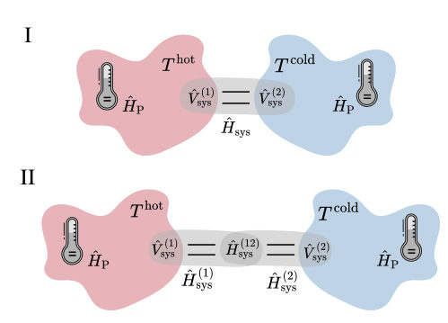
<figcaption class="paper-figure-caption"><b>Fig 1.</b> FIG. 1. Schematic of (I) the non-equilibrium spin-boson model and (II) model of two interacting qubits coupled to separate heat baths. Baths in both models are probed with two level thermometers.</figcaption>
</figure>
<figure class="paper-figure-card">
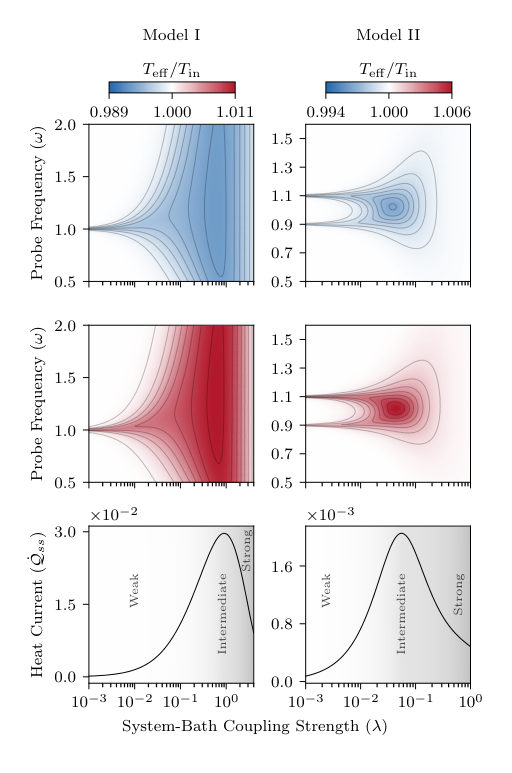
<figcaption class="paper-figure-caption"><b>Fig 2.</b> FIG. 2. Units: ¯h = kB = 1. Left column: Model I (non-equilibrium spin-boson) with system transition frequency ω0 = 1. Right col- umn: Model II (two interacting qubits) with individual frequencies ω(1) 0 = ω(2) 0 = 1 and inter-qubit coupling J12 = 0.1. In both models, the two independent reservoirs have Drude–Lorentz spectral density (γhot = γcold = 1 for Model I; γhot = γcold = 5 for Model II) at ini- tial temperatures T hot in = 3 and T cold in = 2 and λhot = λcold = λ. The embedded two-level thermometers are coupled weakly with coupling strength η = 10−8. The first two rows show Teff(ω,λ) normalized by the respective initial bath temperature Tin (top: hot bath; sec- ond: cold bath)....</figcaption>
</figure>
<figure class="paper-figure-card">
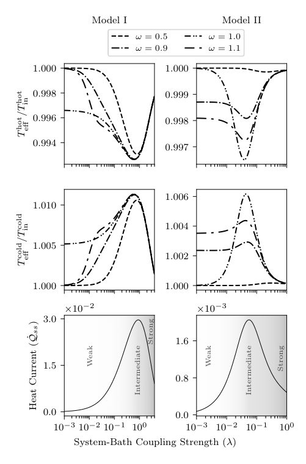
<figcaption class="paper-figure-caption"><b>Fig 3.</b> FIG. 3. Effective temperature as a function of coupling strength (λ) for representative probe frequencies ω (sliced from data in Fig. 2).</figcaption>
</figure>
</div>

<p><strong>Summary.</strong> The paper introduces a frequency-selective thermometric protocol to probe the thermal state of heat baths driving a system into a Non-Equilibrium Steady State (NESS). By measuring spectral dispersion using a tunable two-level probe, researchers can directly quantify how far the bath deviates from equilibrium. This technique successfully explains the characteristic 'turnover effect' observed in quantum heat current as coupling strength changes.</p>
<p><strong>Why it may be interesting.</strong> This work provides a powerful diagnostic tool—frequency-resolved thermometry—to move beyond just measuring heat current and instead diagnose <em>how</em> the bath is non-equilibrium, which is crucial for understanding energy flow in complex quantum devices.</p>
<details>
<summary>Detailed structure</summary>
<p><strong>Main problem.</strong> The primary goal is to characterize the internal thermal state of heat baths that sustain a Non-Equilibrium Steady State (NESS) during quantum heat transport.</p>
<p><strong>Main result.</strong> Spectral dispersion in a frequency-resolved effective temperature spectrum serves as a direct, quantitative witness for the non-equilibrium nature of the coupled heat baths.</p>
<p><strong>Method.</strong> The authors introduce a novel frequency-selective thermometric protocol using a tunable two-level probe to extract an effective temperature spectrum from the system's steady-state response.</p>
<p><strong>Model / system.</strong> The study analyzes quantum heat transport in systems modeled by coupling to multiple bosonic baths (Caldeira-Leggett framework). Demonstrative models include the Non-Equilibrium Spin-Boson model and a two-qubit system.</p>
<p><strong>Key observables.</strong> Frequency-resolved effective temperature spectrum $T_{	ext{eff}}(\omega)$, steady-state heat current ($\dot{Q}_{ss}$), and spectral dispersion of $T_{	ext{eff}}$.</p>
<p><strong>Important parameters / regimes.</strong> System-bath coupling strength ($\lambda$), probe frequency ($\omega$), and the transition between weak, intermediate, and strong coupling regimes.</p>
<p><strong>Assumptions / limitations.</strong> The analysis relies on the Hierarchical Equations of Motion (HEOM) formalism, which requires truncating an infinite hierarchy at a finite tier $N$.</p>
<p><strong>Figures summary.</strong> Figures illustrate how $T_{	ext{eff}}/T_{in}$ and $\dot{Q}_{ss}$ change across weak, intermediate, and strong coupling regimes, with spectral dispersion being maximal in the intermediate regime.</p>
<p><strong>Paper structure.</strong> The paper first establishes the problem of non-equilibrium bath characterization. It then details the theoretical framework using HEOM and introduces the thermometric probe protocol. Finally, it applies this to specific models (NESB, two-qubit) to map out the coupling regimes and interpret the resulting spectral signatures.</p>
</details>
<details>
<summary>Abstract</summary>
<p>Quantum heat transport for non-equilibrium steady state (NESS) exhibits a characteristic turnover effect, where the heat current reaches a maximum and subsequently declines as system-bath coupling increases. Although numerically exact methods can simulate this non-monotonic behavior, they offer limited information on the thermal state of the heat baths. Here, we introduce a frequency-selective thermometric protocol to probe the baths sustaining an NESS. By extracting a frequency-resolved effective temperature spectrum using a tunable two-level probe, we demonstrate that spectral dispersion serves as a direct witness for the non-equilibrium state of the heat baths. To demonstrate the protocol, we applied the hierarchical equations of motion to spin-boson and two-qubit models, though any exact method can be used. For both models, the turnover effect can be explained by how the thermal state of the heat baths evolves as the system-bath coupling strength increases.</p>
</details>
<p><sub><a href="#top">↑ back to top</a></sub></p>

<p><a id="paper-2608.09007"></a></p>
<h3 id="universal-entropic-occupation-statistics-in-disordered-bosonic-resonators"><a href="http://arxiv.org/abs/2608.09007v1">Universal entropic occupation statistics in disordered bosonic resonators</a></h3>
<p><strong>Authors:</strong> Orest Bucicovschi, David A. Meyer<br>
<strong>Type:</strong> theory · <strong>Category:</strong> statistical mechanics · <strong>PDF:</strong> <a href="https://arxiv.org/pdf/2608.09007v1">https://arxiv.org/pdf/2608.09007v1</a><br>
<strong>Analysis basis:</strong> full PDF text, analyzed in chunks
<strong>Topic relevance:</strong> <code>analog quantum simulation</code> <strong>3/5</strong> · <code>non-equilibrium universality</code> <strong>3/5</strong> · <code>Full counting statistics</code> <strong>2/5</strong> · <code>Keldysh / 2PI / non-Gaussian methods</code> <strong>2/5</strong> · <code>correlated / nonlocal dissipation</code> <strong>2/5</strong> · <code>Tavis-Cummings &amp; cavity-many-emitter</code> <strong>1/5</strong> · <code>driven-dissipative phase transition</code> <strong>1/5</strong> · <code>methods for driven-dissipative</code> <strong>1/5</strong></p>
<div class="figure-strip-hint">↔ Scroll figures horizontally</div>
<div class="paper-figures-scroll">
<figure class="paper-figure-card">
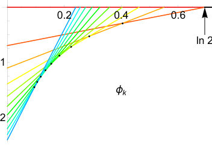
<figcaption class="paper-figure-caption"><b>Fig 1.</b> FIG. 1. Dominant total occupation from the occupation-sector grand potentials of a two-mode cell. Below the horizontal axis, the straight lines are ϕk = kx −ln(k + 1), with x = βϵ and k = 0, . . . , 10; black dots mark successive crossings of the lower envelope. Above the axis, the same abscissa carries the staircase K(x). The ordinate is split: it denotes K above zero and ϕk = βΦk below zero. The K = 0 plateau lies on the horizontal axis for x &gt; ln 2.</figcaption>
</figure>
<figure class="paper-figure-card">
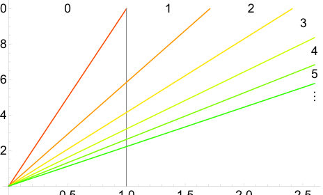
<figcaption class="paper-figure-caption"><b>Fig 2.</b> FIG. 2. Temperature and disorder dependence of the dominant occupation number. (Left) Conditional active-cell distributions on a logarithmic scale. The reference distribution is p(2) k , obtained exactly for uniform disorder at every 0 &lt; τ ≤1 and shown in blue. The red and purple points show the probability distributions for a representative nonuniform detuning density ρ(ϵ) = (1 + 4ϵ/∆)/(3∆) at temperatures τ = 1 and τ = 1/4, respectively, approaching p(2) k as T →0. (Right) Dominant- occupation-number sector map for a uniform detuning band, in u = ϵ/∆and τ = T/T∗. The colored lines uk(τ) = τbk/ ln 2 separate sectors K = k −1 and K = k, labeled by the black numerals 0, 1, 2, 3, 4, 5, . . .....</figcaption>
</figure>
</div>

<p><strong>Summary.</strong> This theoretical paper analyzes the occupation statistics in arrays of disordered bosonic resonators coupled to a thermal reservoir. It derives an entropic staircase governing the most probable total occupations and establishes that for two modes, the low-temperature limit follows the Gauss–Kuzmin distribution. This links photonic thermodynamics directly to fundamental concepts in number theory.</p>
<p><strong>Why it may be interesting.</strong> This work provides a deep connection between bosonic statistics (photonic systems) and number theory (Gauss–Kuzmin), offering universal statistical laws applicable to disordered quantum optical systems.</p>
<details>
<summary>Detailed structure</summary>
<p><strong>Main problem.</strong> The paper investigates the universal occupation statistics arising when multiple bosonic resonators sample a distribution of chemical-potential offsets (detunings) from a common reservoir.</p>
<p><strong>Main result.</strong> For two modes, the low-temperature limit yields the Gauss–Kuzmin distribution, linking photonic thermodynamics to metric number theory. Furthermore, for uniform disorder, this law remains exact up to a finite temperature $T^*$.</p>
<p><strong>Method.</strong> The analysis involves minimizing an entropic potential $\phi_k(x)$ derived from bosonic state counting and analyzing conditional probability ratios in the grand-canonical ensemble.</p>
<p><strong>Model / system.</strong> The system consists of programmable microcavities supporting bosonic resonators, modeled as multiple independent cells coupled to a large reservoir at fixed temperature $T$ and chemical potential $\mu$. The key variable is the detuning $\epsilon_i = E_i - \mu$.</p>
<p><strong>Key observables.</strong> Most-probable total occupations ($K(x)$), conditional occupation probabilities ($p^{(q)}_k$), and the active cell fraction $A(T)$.</p>
<p><strong>Important parameters / regimes.</strong> Temperature $T$, chemical potential $\mu$, detuning density $
ho(\epsilon)$, and the dimensionless variable $x = eta\epsilon$.</p>
<p><strong>Assumptions / limitations.</strong> The analysis relies on the grand-canonical ensemble description, assuming that finite-reservoir effects are negligible for small total occupations.</p>
<p><strong>Figures summary.</strong> Not specified in the notes provided.</p>
<p><strong>Paper structure.</strong> The paper develops the theory by first establishing the entropic staircase via potential minimization. It then derives the conditional law for two modes, identifying the Gauss–Kuzmin distribution in the low-temperature limit and analyzing its exactness under uniform disorder.</p>
</details>
<details>
<summary>Abstract</summary>
<p>Programmable microcavities support grand-canonical photon gases. We show that bosonic state counting creates an entropic staircase of most-probable total occupations. For detuning density continuous and nonzero at the chemical-potential threshold, the active-cell fraction is asymptotically linear at low temperature and the conditional law has a universal limit; for uniform disorder the law is exact over a finite temperature interval. For two modes it is the Gauss--Kuzmin distribution, linking photonic thermodynamics and metric number theory. We outline finite-array and dye-microcavity tests.</p>
</details>
<p><sub><a href="#top">↑ back to top</a></sub></p>

<p><a id="paper-2608.08279"></a></p>
<h3 id="energetic-cost-of-temporal-information-processing-in-quantum-reservoirs"><a href="http://arxiv.org/abs/2608.08279v1">Energetic Cost of Temporal Information Processing in Quantum Reservoirs</a></h3>
<p><strong>Authors:</strong> Gabriele Cenedese, Gonzalo Manzano, Gian Luca Giorgi, Roberta Zambrini<br>
<strong>Type:</strong> theory · <strong>Category:</strong> disordered systems and neural networks · <strong>PDF:</strong> <a href="https://arxiv.org/pdf/2608.08279v1">https://arxiv.org/pdf/2608.08279v1</a><br>
<strong>Analysis basis:</strong> full PDF text, analyzed in chunks
<strong>Topic relevance:</strong> <code>driven-dissipative phase transition</code> <strong>3/5</strong> · <code>methods for driven-dissipative</code> <strong>3/5</strong> · <code>Keldysh / 2PI / non-Gaussian methods</code> <strong>2/5</strong> · <code>non-equilibrium universality</code> <strong>2/5</strong> · <code>analog quantum simulation</code> <strong>1/5</strong> · <code>correlated / nonlocal dissipation</code> <strong>1/5</strong> · <code>quantum measurements</code> <strong>1/5</strong> · <code>scars &amp; prethermalization</code> <strong>1/5</strong></p>
<div class="figure-strip-hint">↔ Scroll figures horizontally</div>
<div class="paper-figures-scroll">
<figure class="paper-figure-card">
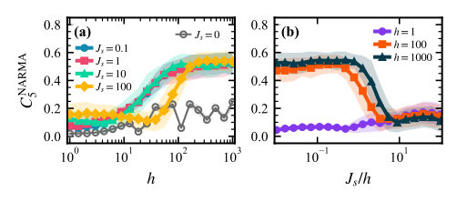
<figcaption class="paper-figure-caption"><b>Fig 1.</b> FIG. 3. Same as Fig. 1(c,d) for the fifth-order NARMA capac- ity, CNARMA 5 . The switching work follows Fig. 1(a,b), differing only by the input rescaling used for the NARMA benchmark.</figcaption>
</figure>
<figure class="paper-figure-card">
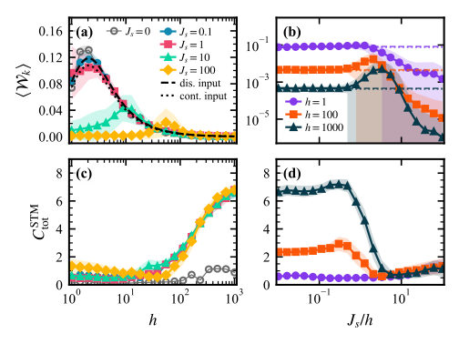
<figcaption class="paper-figure-caption"><b>Fig 2.</b> FIG. 1. Average work and STM performance. (a,b) ⟨Wk⟩as a function of h for different Js and of Js/h for different h, respectively, numerical results are additionally averaged over independent couplings realizations. (c,d) Total STM capacity, CSTM tot , as a function of h for different Js and of Js/h for different h, respectively. Dashed lines in panels (a) and (b) show the analytical prediction of ⟨Wk⟩for discretized inputs. The dotted line in panel (a) corresponds to the continuous- input limit as in Eq. 8. Shaded regions indicate one standard deviation over 100 independent realizations of the random couplings and input sequences. Here and in the following we set kB = 1 and ℏ= 1 and we fix...</figcaption>
</figure>
<figure class="paper-figure-card">
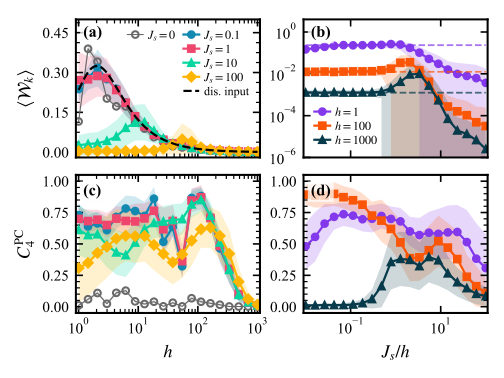
<figcaption class="paper-figure-caption"><b>Fig 3.</b> FIG. 2. Same as Fig. 1 for the fourth-order PC capacity, CPC 4 .</figcaption>
</figure>
<figure class="paper-figure-card">
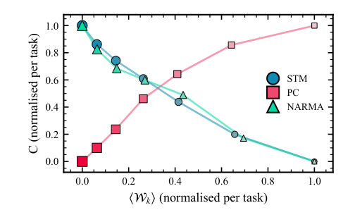
<figcaption class="paper-figure-caption"><b>Fig 4.</b> FIG. 4. Normalized task capacity versus normalized aver- age switching work per input for the STM, fourth-order PC, and fifth-order NARMA tasks, obtained by varying h from 102 to 103. For each task, both the capacity and the aver- age switching work are independently rescaled to the interval [0, 1]. Circles, squares, and triangles denote the STM, PC, and NARMA tasks, respectively; marker size and color satu- ration increase with h.</figcaption>
</figure>
<figure class="paper-figure-card">
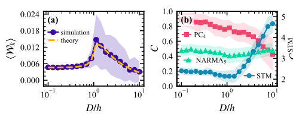
<figcaption class="paper-figure-caption"><b>Fig 5.</b> FIG. 7. (a) Average switching work as a function of the dis- order strength D/h. The dashed line shows the analytical prediction of Eq. (8). (b) Average STM, fourth-order PC, and fifth-order NARMA capacities as a function of D/h.</figcaption>
</figure>
</div>

<p><strong>Summary.</strong> This paper analyzes the energetic cost of temporal data processing in Quantum Reservoir Computing using an interacting spin reservoir model. It shows that information encoding is characterized by a measurable switching work ($ ext{W}_k$), which can be analytically derived under weak coupling assumptions. The findings reveal a crucial separation between energy expenditure and computational capability, offering guidelines for designing energy-efficient quantum machine learning systems.</p>
<p><strong>Why it may be interesting.</strong> This work directly connects fundamental concepts from open quantum systems (work extraction, dissipation) to modern machine learning paradigms (reservoir computing), providing physical constraints on energy-efficient computation.</p>
<details>
<summary>Detailed structure</summary>
<p><strong>Main problem.</strong> The study aims to understand the physical principles governing the energetic cost associated with temporal information processing in Quantum Reservoir Computing (QRC). Specifically, it seeks to clarify when energy efficiency aligns with computational performance.</p>
<p><strong>Main result.</strong> The work done during input encoding is identified as the switching work ($ ext{W}_k$), which is governed by local reservoir unit responses. This leads to an anti-correlation between energetic cost and performance for different types of tasks (linear vs. nonlinear).</p>
<p><strong>Method.</strong> The authors derive analytical expressions for the average switching work using weak-interaction approximations within the framework of the GKLS master equation.</p>
<p><strong>Model / system.</strong> The system is an interacting spin reservoir composed of $N$ spin-1/2 particles, governed by a Hamiltonian including local fields and pairwise interactions. Dynamics are described by the GKLS master equation, analyzed in the weak interacting regime.</p>
<p><strong>Key observables.</strong> Switching Work ($  ext{W}_k$), Heat ($ ext{Q}_k$), Computational Capacity ($C$), and thermodynamic quantities like entropy production ($\Sigma_k$).</p>
<p><strong>Important parameters / regimes.</strong> Interaction strength ($J_{ij}$), local field amplitude ($a_k$), disorder strength ($D$), and the ratio $J_s/h$.</p>
<p><strong>Assumptions / limitations.</strong> The analysis relies on the weak interacting regime approximation, assuming a piecewise-constant driving protocol for work calculation.</p>
<p><strong>Figures summary.</strong> Figures illustrate how switching work ($\langle W_k 
angle$) and computational capacity vary with input amplitude ($h$) and interaction strength ($J_s/h$) for different tasks (STM, PC).</p>
<p><strong>Paper structure.</strong> The paper develops the theory by first establishing the Hamiltonian and dynamics, then deriving analytical expressions for $   ext{W}_k$ in the weak coupling limit. It subsequently applies these results to benchmark tasks, demonstrating the separation of encoding work from information processing mechanisms.</p>
</details>
<details>
<summary>Abstract</summary>
<p>Quantum reservoir computing offers a promising route toward energy-efficient machine learning by processing temporal information with minimal training overhead. Yet, the physical principles linking its energetic cost to computational performance remain largely unexplored. Here we show that, in an interacting spin reservoir, information encoding and information processing are governed by distinct physical mechanisms. In the weak interacting regime, we derive an analytical expression for the average (switching) work, showing that the energetic cost of encoding new inputs is determined by the local response of the reservoir units. In contrast, interactions primarily redistribute the encoded information, generating memory and nonlinear features while only weakly affecting the work. This separation produces opposite correlations between energetic cost and performance for representative linear and nonlinear benchmark tasks. Our results identify the switching work as the energetic signature of information encoding and clarify when energetic efficiency and computational performance are compatible.</p>
</details>
<p><sub><a href="#top">↑ back to top</a></sub></p>

<p><a id="paper-2608.08842"></a></p>
<h3 id="light-stabilized-metastable-electronic-state-in-nio-with-enhanced-orbital-hybridization2"><a href="http://arxiv.org/abs/2608.08842v1">Light-Stabilized Metastable Electronic State in NiO with Enhanced Orbital Hybridization2</a></h3>
<p><strong>Authors:</strong> Thomas C. Rossi, Fabio G. Santomauro, Lars Mewes, Janina Löffler, Dominik Kinschel, Giacomo Rossi, Mario Gutiérrez, Oliviero Cannelli, Boris V. Sorokin, Jochen Rittmann, Jakob Kel, James Budarz, Anna Wach, Adam H. Clark, Emiliano Dal Molin, Maged F. Bekheet, Albert Gili, Sebastian Praetz, Daniel Grötzsch, Delphine Cabaret, Renske M. van der Veen, Majed Chergui<br>
<strong>Type:</strong> both · <strong>Category:</strong> strongly correlated electrons · <strong>PDF:</strong> <a href="https://arxiv.org/pdf/2608.08842v1">https://arxiv.org/pdf/2608.08842v1</a><br>
<strong>Analysis basis:</strong> full PDF text, analyzed in chunks
<strong>Topic relevance:</strong> <code>methods for driven-dissipative</code> <strong>3/5</strong> · <code>non-equilibrium universality</code> <strong>3/5</strong> · <code>Keldysh / 2PI / non-Gaussian methods</code> <strong>2/5</strong> · <code>driven-dissipative phase transition</code> <strong>2/5</strong> · <code>quantum measurements</code> <strong>2/5</strong> · <code>correlated / nonlocal dissipation</code> <strong>1/5</strong> · <code>scars &amp; prethermalization</code> <strong>1/5</strong></p>
<div class="figure-strip-hint">↔ Scroll figures horizontally</div>
<div class="paper-figures-scroll">
<figure class="paper-figure-card">
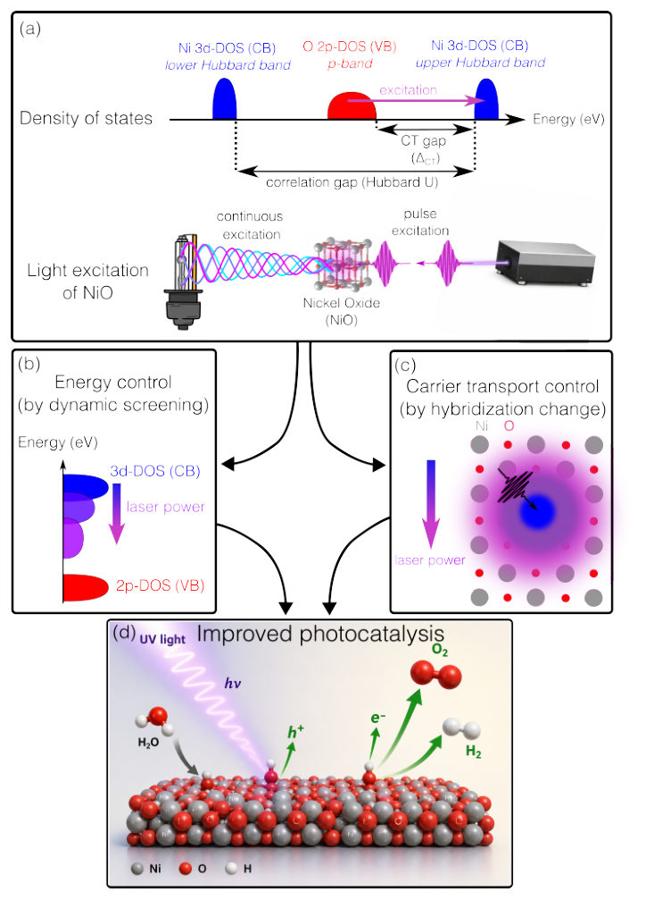
<figcaption class="paper-figure-caption"><b>Fig 1.</b> Figure 1: Photoinduced changes in the electronic structure of correlated oxides can lead to</figcaption>
</figure>
<figure class="paper-figure-card">
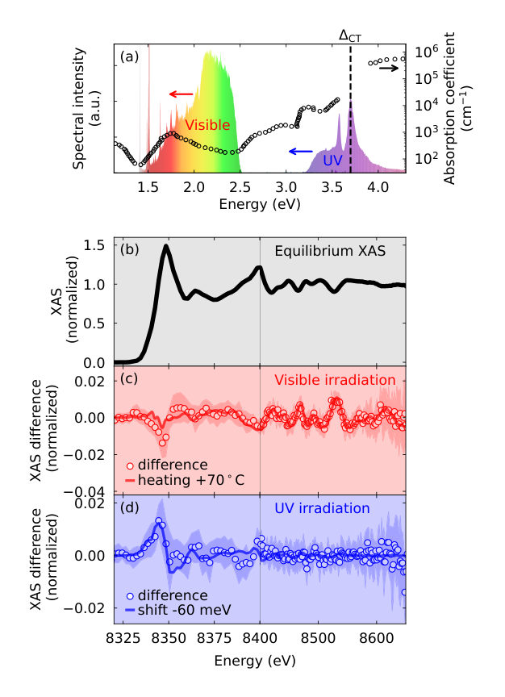
<figcaption class="paper-figure-caption"><b>Fig 2.</b> Figure 2: Long-lived electronic excited state in NiO under continuous ultraviolet irradiation.</figcaption>
</figure>
<figure class="paper-figure-card">
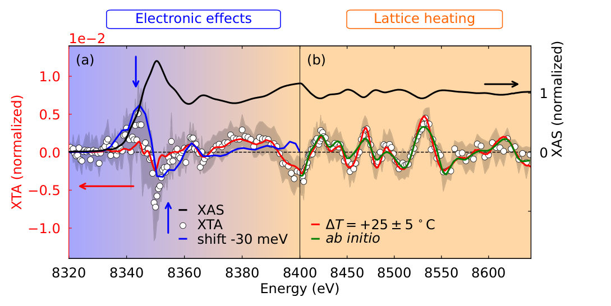
<figcaption class="paper-figure-caption"><b>Fig 3.</b> Figure 3: Overlapping electronic and heating effects in the photoexcited state of NiO</figcaption>
</figure>
<figure class="paper-figure-card">
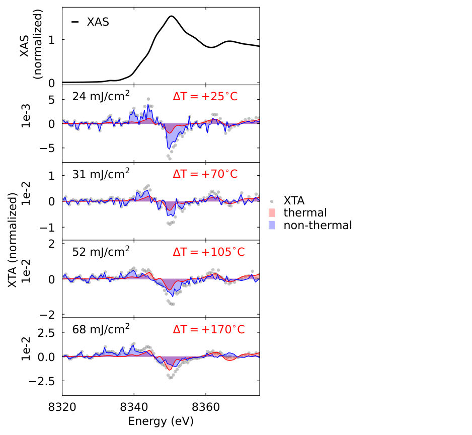
<figcaption class="paper-figure-caption"><b>Fig 4.</b> Figure 4: Spectral signature of a non-thermal state in photoexcited NiO near the absorption</figcaption>
</figure>
<figure class="paper-figure-card">
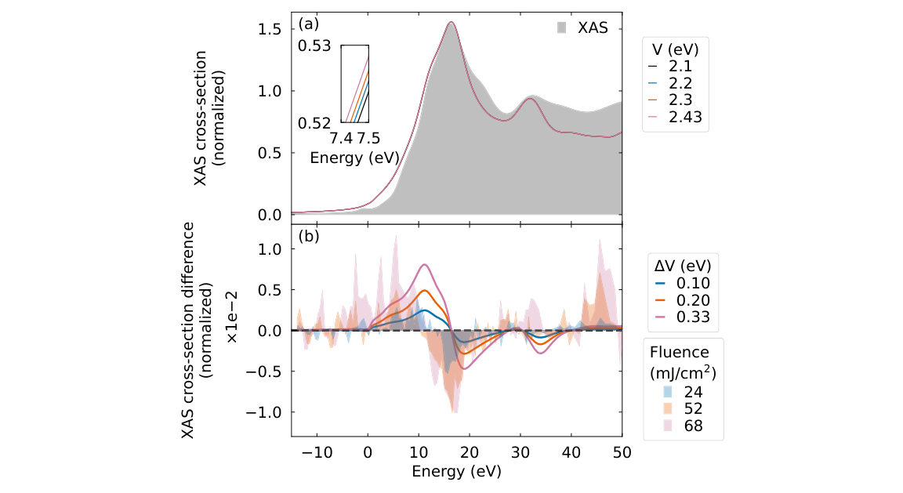
<figcaption class="paper-figure-caption"><b>Fig 5.</b> Figure 5: Red shift of the XAS spectrum in the excited state interpreted as increase in</figcaption>
</figure>
</div>

<p><strong>Summary.</strong> The authors demonstrate that light can dynamically tune the electronic structure of NiO by inducing a metastable state with enhanced orbital hybridization. By comparing spectroscopic signatures under high-density pulsed versus low-density continuous UV excitation, they prove this effect is not merely thermal. This establishes 'photoinduced screening' as a powerful mechanism for designing next-generation optoelectronic materials.</p>
<p><strong>Why it may be interesting.</strong> This work is highly relevant as it uses ultrafast spectroscopy and advanced computational methods to probe non-equilibrium, strongly correlated states in solids, which is a key area for understanding charge transfer dynamics in quantum materials.</p>
<details>
<summary>Detailed structure</summary>
<p><strong>Main problem.</strong> The study aims to develop methods for dynamically controlling electron-electron interactions and metal-ligand hybridization in correlated oxides using light, moving beyond static doping techniques.</p>
<p><strong>Main result.</strong> Photoexcitation of NiO creates a long-lived metastable state characterized by enhanced orbital hybridization, which can be stabilized without significant lattice heating via continuous UV irradiation.</p>
<p><strong>Method.</strong> The research combines in situ X-ray Absorption Spectroscopy (XAS) measurements under both pulsed and continuous UV excitation with first-principles DFT+U+V calculations to model the electronic response.</p>
<p><strong>Model / system.</strong> The physical system is Nickel Oxide (NiO), a prototypical transparent semiconductor used as a hole-transport material. The theoretical framework involves modeling correlated electron behavior using DFT+$U+V$ to account for on-site and intersite Coulomb interactions.</p>
<p><strong>Key observables.</strong> Enhanced Ni 3d–O 2p orbital hybridization, spectral shifts (red shift), carrier densities ($\sim 10^{13}$ to $10^{20} 	ext{ cm}^{-3}$), and state lifetimes ($\sim 600 	ext{ ps}$).</p>
<p><strong>Important parameters / regimes.</strong> The study compares responses under high-density pulsed excitation versus low-density continuous UV irradiation, allowing the separation of thermal vs. electronic effects.</p>
<p><strong>Assumptions / limitations.</strong> A central challenge addressed is disentangling intrinsic electronic changes from lattice heating; the analysis assumes that photoinduced screening can be isolated as a primary mechanism for tuning correlations.</p>
<p><strong>Figures summary.</strong> Figures compare difference XAS spectra under visible (lattice-heating dominated) vs. UV excitation (electronic shift observed), and show time-resolved XTA data confirming persistent electronic shifts under continuous low-density pumping.</p>
<p><strong>Paper structure.</strong> The paper progresses by first establishing the feasibility of light control via spectroscopy, then distinguishing between thermal and purely electronic responses using different excitation regimes (pulsed vs. continuous UV), and finally providing theoretical grounding through DFT+$U+V$ calculations to attribute spectral changes to photoinduced screening.</p>
</details>
<details>
<summary>Abstract</summary>
<p>Light-driven control of electronic structure in correlated metal oxides offers new opportunities for optimizing materials used in photovoltaic and photoelectrochemical technologies. We show that photoexcitation of NiO, a prototypical transparent semiconductor and hole-transport material, across its charge-transfer gap produces a long-lived metastable state with enhanced Ni 3d-O 2p orbital hybridization. We characterize this state using Ni K-edge X-ray absorption spectroscopy, which probes how structural and electronic changes affect the unoccupied p density of states during continuous and pulsed ultraviolet excitation. Under pulsed excitation, high carrier densities of approximately 10^20 per cubic centimeter generate a state with a lifetime of approximately 600 picoseconds, in which enhanced hybridization coexists with lattice heating. By contrast, continuous ultraviolet irradiation at much lower carrier densities of approximately 10^13 per cubic centimeter stabilizes a similar electronic state with negligible lattice heating, demonstrating that its formation is not solely thermally driven. First-principles DFT+U+V calculations attribute the spectral changes to stronger Ni 3d-O 2p hybridization, which alters the unoccupied Ni 4p states probed by dipole-allowed K-edge transitions. We attribute this change to the dynamic screening of on-site electronic correlations following photoexcitation, which redistributes the charge density. Because orbital hybridization governs carrier transport and charge-transfer energetics, our results identify photoinduced screening as a mechanism for dynamically tuning correlated oxides and suggest new design principles for optoelectronic materials.</p>
</details>
<p><sub><a href="#top">↑ back to top</a></sub></p>

<p><a id="paper-2608.09212"></a></p>
<h3 id="squeezing-for-dispersive-readout-of-nv-magnetometer"><a href="http://arxiv.org/abs/2608.09212v1">Squeezing for dispersive readout of NV magnetometer</a></h3>
<p><strong>Authors:</strong> A. M. Kozodaev, S. M. Drofa, P. G. Vilyuzhanina, A. Chernyavskiy, N. I. Salangin, A. N. Smolyaninov, S. Ya. Kilin, I. S. Cojocaru, S. V. Bolshedvorskii, V. V. Soshenko, F. Y. Khalili, A. V. Akimov<br>
<strong>Type:</strong> theory · <strong>Category:</strong> other · <strong>PDF:</strong> <a href="https://arxiv.org/pdf/2608.09212v1">https://arxiv.org/pdf/2608.09212v1</a><br>
<strong>Analysis basis:</strong> full PDF text, analyzed in chunks
<strong>Topic relevance:</strong> <code>methods for driven-dissipative</code> <strong>3/5</strong> · <code>quantum optics experiment</code> <strong>3/5</strong> · <code>QC/QI experiment</code> <strong>2/5</strong> · <code>quantum measurements</code> <strong>2/5</strong> · <code>Keldysh / 2PI / non-Gaussian methods</code> <strong>1/5</strong> · <code>Tavis-Cummings &amp; cavity-many-emitter</code> <strong>1/5</strong> · <code>driven-dissipative phase transition</code> <strong>1/5</strong> · <code>interference shaping light</code> <strong>1/5</strong></p>
<div class="figure-strip-hint">↔ Scroll figures horizontally</div>
<div class="paper-figures-scroll">
<figure class="paper-figure-card">
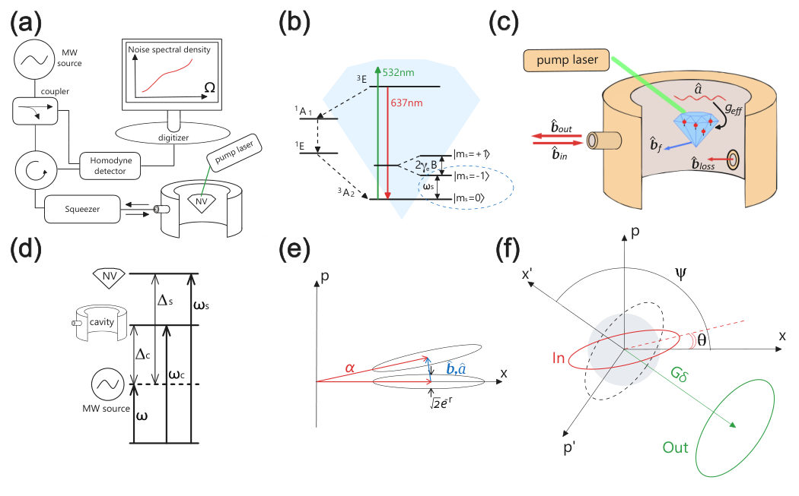
<figcaption class="paper-figure-caption"><b>Fig 1.</b> Figure 1: a) Scheme of the experiment. The external MW field passes through the squeeze element. The signal reflected from the cavity falls on the homodyne detector. As a result, we get the noise spectral density. b) NV center in diamond principal level scheme. The two-level system selected for magnetometry encircled by blue dot-dashed line; c) Cavity scheme. ˆbin,ˆbout - input/output quantum noise of MW field; ˆbloss-thermal noise of the cavity; ˆbf- NV spin noise; geff-coupling coefficient; a-cavity mode operator d) Principal scheme of the frequencies used; e) Idea of separation of classical offset field and quantum signal, which is assumed much smaller then classical; f) Parameters of...</figcaption>
</figure>
<figure class="paper-figure-card">
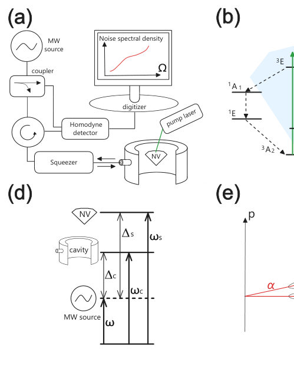
<figcaption class="paper-figure-caption"><b>Fig 2.</b> Figure 1d:</figcaption>
</figure>
<figure class="paper-figure-card">
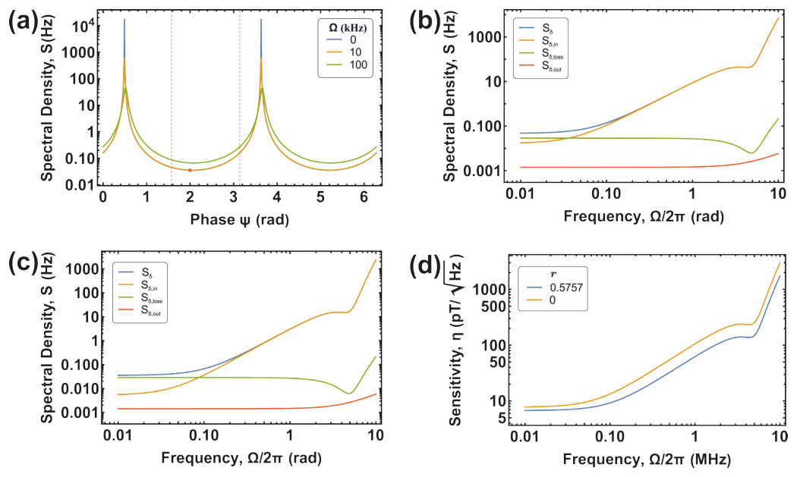
<figcaption class="paper-figure-caption"><b>Fig 3.</b> Figure 2: a) Dependence of spectral density on ψ for different Ωat θopt ≈1.35rad at room temperature (T=293K). The red marker on the picture indicates the minimum at Ω= 0. The simulation parameters are summarized in Table 1: ∆c = 0, ∆s = 2π×5MHz, Q = 2×104, k1 = 0.8k, the number of photons in the cavity N = 6.2×1015, the number of NV centers Nq = 9×1014, ensemble coupling coefficient geff = 2π×0.12 MHz (see Appendix D), squeeze parameter r = 0 (no squeeze); b,c) Contribution of individual components to the spectral density, b - no squeeze, c - squeeze of 5 dB; d) Sensitivity with 5 dB squeezing (blue) and without squeezing (orange).</figcaption>
</figure>
<figure class="paper-figure-card">
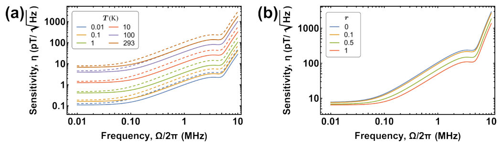
<figcaption class="paper-figure-caption"><b>Fig 4.</b> Figure 3: a) Sensitivity versus temperature. Solid curves correspond to 5 dB squeezing (r=0.5757), dashed curves to no squeezing. Data are shown for T = 0.01, 0.1, 1, 10, 100, and 293 K.; b) Room-temperature (T=293 K) sensitivity for various squeezing parameters r. Other modeling parameters correspond to the fig.2 and summarized in Table 1.</figcaption>
</figure>
</div>

<p><strong>Summary.</strong> The paper theoretically analyzes the noise limitations of microwave dispersive readout magnetometers based on NV centers. By incorporating quantum squeezing into the probing field, the authors derive methods to suppress measurement noise below the standard shot-noise limit. This demonstrates a pathway to significantly enhance magnetometer sensitivity even under realistic room-temperature operating conditions.</p>
<p><strong>Why it may be interesting.</strong> This work provides a detailed quantum noise analysis for solid-state magnetometry, directly applying advanced concepts like squeezing to overcome fundamental measurement limits in a highly relevant platform (NV centers).</p>
<details>
<summary>Detailed structure</summary>
<p><strong>Main problem.</strong> To improve the sensitivity of Nitrogen Vacancy (NV) magnetometer readout by utilizing quantum squeezing in the probing microwave field, especially for dispersive readout schemes that avoid optical detection.</p>
<p><strong>Main result.</strong> Squeezing the input microwave field allows for a reduction in the minimum total noise spectral density below the standard shot-noise limit, improving device performance even at room temperature.</p>
<p><strong>Method.</strong> The analysis uses quantum Langevin equations solved in the frequency domain to derive the output field operator and subsequently calculate the noise spectral density by optimizing detection angles.</p>
<p><strong>Model / system.</strong> The system involves NV centers (modeled as an effective Two-Level System) coupled dispersively to a microwave cavity. The dynamics are governed by linearized Langevin equations incorporating input, loss, and spin noise sources.</p>
<p><strong>Key observables.</strong> Noise spectral density $S_\delta(\Omega)$, minimum detectable magnetic field ($\eta$), and the output homodyne signal $\hat{b}_\psi^{	ext{out}}(\Omega)$.</p>
<p><strong>Important parameters / regimes.</strong> Cavity quality factor ($Q$), input power ($P_{	ext{in}}$), effective coupling rate ($g_{eff}$), and squeezing angle ($   heta$).</p>
<p><strong>Assumptions / limitations.</strong> The analysis relies on the Markov approximation, linearization of Langevin equations, and assumes negligible interaction between different NV centers for initial derivations.</p>
<p><strong>Figures summary.</strong> Figure 1 illustrates the experimental scheme and input/output quantum noise components; Figure 1(f) shows how the output field can be squeezed.</p>
<p><strong>Paper structure.</strong> The paper progresses from defining the Hamiltonian and Langevin equations to solving them in the frequency domain, deriving the full output field expression, calculating the noise spectral density by optimizing detection angles ($ heta$ and $\psi$), and finally analyzing the scaling of sensitivity with NV concentration and cavity parameters.</p>
</details>
<details>
<summary>Abstract</summary>
<p>Nitrogen vacancy centers in diamond have established themselves as good sensing element for various type of sensors. In particular magnetometers based on diamond impurities are quickly developing and are already on the market. Yet, optical readout in these systems complicates system design. Recently schemes of dispersive readout of nitrogen vacancy spin state using high finesse dielectric cavities for microwave field were proposed, which do not use the optical readout scheme. However, only shot noise based estimates were so far done for sensitivity of these devices. Here we provide detailed analysis of various practically relevant noise and loss sources for such a system. Furthermore, we consider the possibility of using the squeezing quantum state of the probing microwave field and show it allows to improve the device performance even at room temperature.</p>
</details>
<p><sub><a href="#top">↑ back to top</a></sub></p>

<p><a id="paper-2608.09039"></a></p>
<h3 id="anharmonic-dephasing-in-the-electron-phonon-interaction"><a href="http://arxiv.org/abs/2608.09039v1">Anharmonic dephasing in the electron-phonon interaction</a></h3>
<p><strong>Authors:</strong> Mingran Kong, Bartomeu Monserrat<br>
<strong>Type:</strong> theory · <strong>Category:</strong> other · <strong>PDF:</strong> <a href="https://arxiv.org/pdf/2608.09039v1">https://arxiv.org/pdf/2608.09039v1</a><br>
<strong>Analysis basis:</strong> full PDF text, analyzed in chunks
<strong>Topic relevance:</strong> <code>Keldysh / 2PI / non-Gaussian methods</code> <strong>3/5</strong> · <code>correlated / nonlocal dissipation</code> <strong>2/5</strong> · <code>methods for driven-dissipative</code> <strong>2/5</strong> · <code>quantum measurements</code> <strong>2/5</strong> · <code>analog quantum simulation</code> <strong>1/5</strong> · <code>driven-dissipative phase transition</code> <strong>1/5</strong> · <code>non-equilibrium universality</code> <strong>1/5</strong> · <code>scars &amp; prethermalization</code> <strong>1/5</strong></p>
<div class="figure-strip-hint">↔ Scroll figures horizontally</div>
<div class="paper-figures-scroll">
<figure class="paper-figure-card">
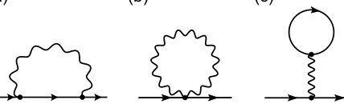
<figcaption class="paper-figure-caption"><b>Fig 1.</b> FIG. 1. Electron-phonon coupling Feynman diagrams within second-order perturbation theory. (a) Fan-Migdal diagram with two first-order electron-phonon coupling vertices; (b) Debye-Waller diagram with one second-order electron-phonon coupling vertex; (c) tadpole diagram with two first-order electron-phonon coupling vertices.</figcaption>
</figure>
<figure class="paper-figure-card">
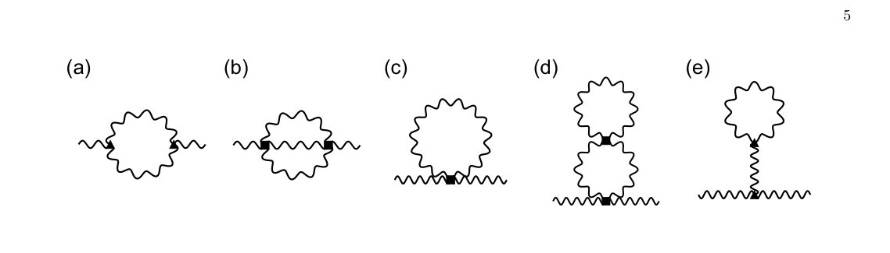
<figcaption class="paper-figure-caption"><b>Fig 2.</b> FIG. 2. Feynman diagrams for phonon-phonon interactions. (a) Second-order bubble diagram driven by three-phonon coupling; (b) second-order bubble diagram driven by four-phonon coupling; (c) first-order loop diagram driven by four-phonon coupling; (d) second-order loop diagram driven by four-phonon coupling; (e) second-order tadpole diagram driven by three- phonon coupling.</figcaption>
</figure>
<figure class="paper-figure-card">
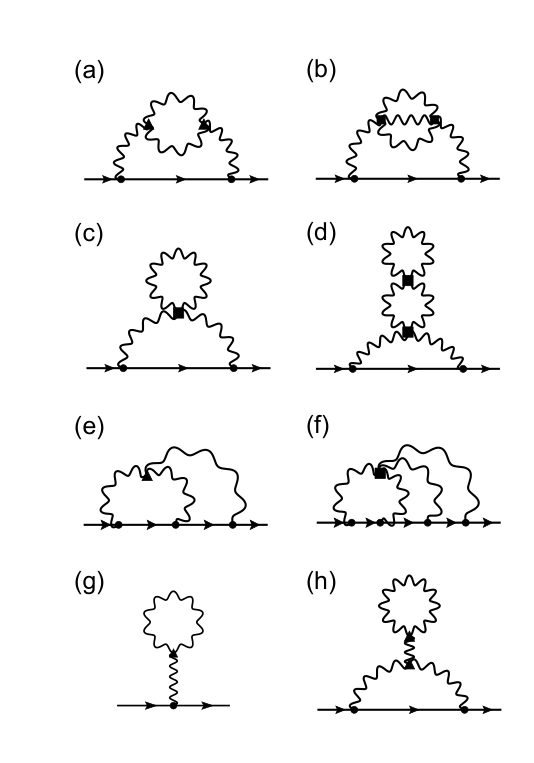
<figcaption class="paper-figure-caption"><b>Fig 3.</b> FIG. 3. Low-order Feynman diagrams combining electron- phonon coupling and phonon-phonon coupling. Each row cor- responds to a correction with a specific physical meaning: the first row with (a) and (b) describes the three-phonon and four-phonon bubble diagrams; the second row with (c) and (d) describes the two lowest-order four-phonon loop diagrams modifying the phonon line in the Fan-Midgal self-energy; the third row, panels (e) and (f), shows the vertex corrections to the electron-phonon self-energy mediated by three-phonon and four-phonon interactions, respectively; panels (g) and (h) correspond to the three-phonon tadpole diagram contribu- tions to the electron-phonon coupling -...</figcaption>
</figure>
<figure class="paper-figure-card">
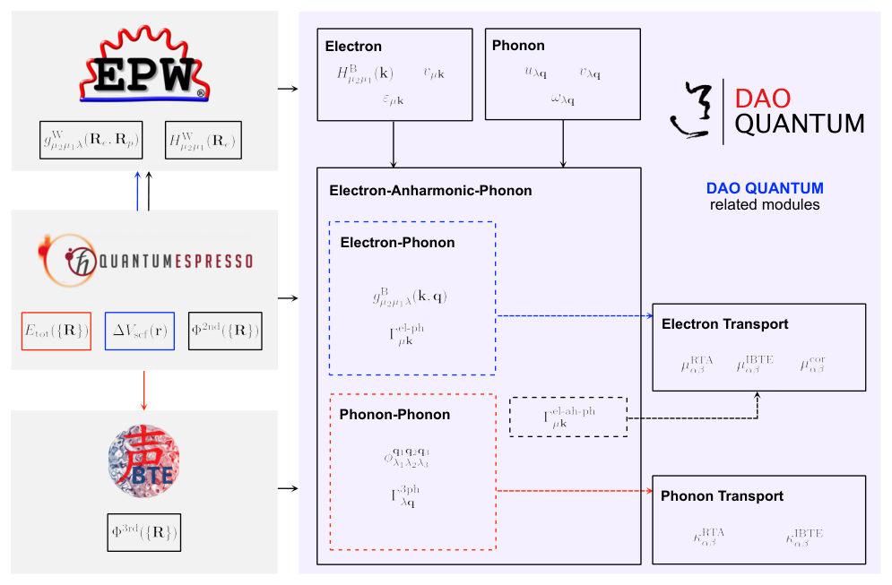
<figcaption class="paper-figure-caption"><b>Fig 4.</b> FIG. 5. Workflow for the first principles implementation of the electron-phonon and electron-anharmonic-phonon calculations. The blue box contains the quantities associated with electron-phonon coupling, the red box contains the quantities associated with phonon-phonon coupling, and the black color contains the quantities associated with electron-anharmonic-phonon coupling.</figcaption>
</figure>
<figure class="paper-figure-card">
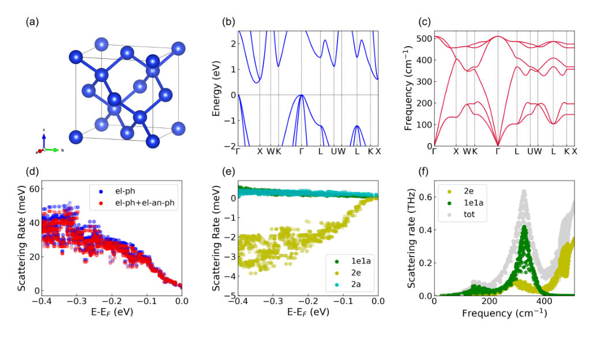
<figcaption class="paper-figure-caption"><b>Fig 5.</b> FIG. 6. Silicon results, including (a) crystal structure; (b) electron band structure; (c) phonon dispersion; (d) electron- phonon scattering rates in blue and electron-phonon plus electron-anharmonic-phonon scattering rates in red at 300 K; (e) process-resolved electron-anharmonic-phonon correction versus electron energy; (f) process-resolved three-phonon scattering rates versus phonon frequencies.</figcaption>
</figure>
</div>

<p><strong>Summary.</strong> This work develops a theoretical framework to calculate electron-phonon scattering rates by explicitly including phonon dephasing caused by anharmonic lattice vibrations. By extending standard many-body perturbation theory, the authors show that finite phonon lifetimes significantly impact electronic transport properties in materials like Si and PbTe.</p>
<p><strong>Why it may be interesting.</strong> While focused on condensed matter, the treatment of finite lifetimes and complex many-body self-energies shares mathematical parallels with open quantum system dynamics where environmental coupling (like phonons) leads to decoherence and energy renormalization.</p>
<details>
<summary>Detailed structure</summary>
<p><strong>Main problem.</strong> The primary goal is to accurately calculate electron-phonon coupling scattering rates by incorporating the effects of finite phonon lifetimes arising from anharmonic three-phonon interactions.</p>
<p><strong>Main result.</strong> The study derives a new expression for these scattering rates and establishes that accounting for finite phonon lifetimes is crucial for an accurate evaluation of electron-phonon coupling in various materials.</p>
<p><strong>Method.</strong> The authors use advanced many-body perturbation theory, extending standard self-energy calculations (like Fan-Migdal) to include anharmonic corrections via three-phonon diagrams.</p>
<p><strong>Model / system.</strong> The system is the electron-phonon interaction within crystalline solids (e.g., Si, PbTe). The theoretical framework involves coupling Hamiltonians ($\hat{H}_0 + \hat{V}_{ep} + \hat{V}_{pp}$) and calculating self-energies using Matsubara Green's functions.</p>
<p><strong>Key observables.</strong> Electron-phonon scattering rates, electronic state lifetimes (imaginary part of the electron self-energy), and phonon spectral function renormalization.</p>
<p><strong>Important parameters / regimes.</strong> The relative timescales between phonon-phonon interaction ($    au_{ph-ph}$) and electron-phonon interaction ($   au_{e-ph}$); temperature ($T$).</p>
<p><strong>Assumptions / limitations.</strong> Conventional calculations often assume $ au_{ph-ph} \gg  au_{e-ph}$, which the work aims to correct for when timescales become comparable.</p>
<p><strong>Figures summary.</strong> Figures illustrate Feynman diagrams (Fan-Migdal, Debye-Waller) and show convergence plots of calculated scattering rates as computational grid sizes increase for materials like PbTe.</p>
<p><strong>Paper structure.</strong> The paper systematically builds the theory: first establishing the Hamiltonian, then deriving the standard electron self-energy ($\Sigma_{FM}$), followed by incorporating the phonon self-energy ($\Pi$) from anharmonic interactions, and finally presenting calculations of scattering rates using these combined effects.</p>
</details>
<details>
<summary>Abstract</summary>
<p>Electron-phonon coupling has been a central topic in condensed matter physics for decades, and firstprinciples methods have demonstrated remarkable success in quantitatively capturing its role in a wide variety of physical phenomena and materials. Conventional calculations of electron-phonon coupling typically assume that phonons have infinite lifetimes, but phonons can exhibit finite lifetimes due to anharmonic phonon-phonon interactions. In this work, we derive an expression for the electron-phonon coupling scattering rates including the effects of anharmonic three-phonon interactions, which lead to phonon dephasing and finite phonon lifetimes. We also describe a first-principles implementation of this anharmonic electron-phonon coupling which can be seamlessly integrated within existing workflows for the evaluation of electron-phonon and phonon-phonon coupling interactions. Finally, we present calculations of electron-phonon scattering rates including phonon dephasing in a range of materials, and discuss the different microscopic mechanisms by which anharmonic phonons influence electron-phonon coupling. This study establishes the importance of finite phonon lifetimes in the evaluation of electron-phonon coupling, and provides a platform to explore these effects in a wide range of materials and phenomena.</p>
</details>
<p><sub><a href="#top">↑ back to top</a></sub></p>

<p><a id="paper-2608.08922"></a></p>
<h3 id="clustered-attractor-manifolds-and-dynamical-condensation-in-self-attention"><a href="http://arxiv.org/abs/2608.08922v1">Clustered Attractor Manifolds and Dynamical Condensation in Self-Attention</a></h3>
<p><strong>Authors:</strong> Qucheng Gao, Zuyi Yang, Xiao Chen<br>
<strong>Type:</strong> theory · <strong>Category:</strong> disordered systems and neural networks · <strong>PDF:</strong> <a href="https://arxiv.org/pdf/2608.08922v1">https://arxiv.org/pdf/2608.08922v1</a><br>
<strong>Analysis basis:</strong> full PDF text, analyzed in chunks
<strong>Topic relevance:</strong> <code>driven-dissipative phase transition</code> <strong>3/5</strong> · <code>non-equilibrium universality</code> <strong>3/5</strong> · <code>Keldysh / 2PI / non-Gaussian methods</code> <strong>2/5</strong> · <code>methods for driven-dissipative</code> <strong>2/5</strong> · <code>analog quantum simulation</code> <strong>1/5</strong> · <code>correlated / nonlocal dissipation</code> <strong>1/5</strong> · <code>scars &amp; prethermalization</code> <strong>1/5</strong></p>
<div class="figure-strip-hint">↔ Scroll figures horizontally</div>
<div class="paper-figures-scroll">
<figure class="paper-figure-card">
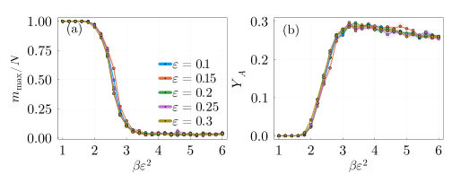
<figcaption class="paper-figure-caption"><b>Fig 1.</b> FIG. 1. Noise-induced fragmentation of a macroscopic cluster for N = 4096 at observation time T = N. (a) Largest-cluster fraction mmax/N. (b) Mean attention IPR YA. Results for five noise amplitudes are plotted against the effective sharp- ness α = βϵ2 and collapse onto a common curve. Shaded regions indicate the standard error of the mean across random realizations.</figcaption>
</figure>
<figure class="paper-figure-card">
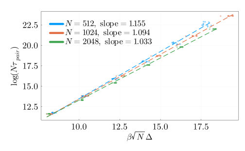
<figcaption class="paper-figure-caption"><b>Fig 2.</b> FIG. 2. Scaling of the coarsening time for random pair clusters. The N tokens are initialized as N/2 aligned pairs, with independently distributed random pair directions. Here qpr(t) denotes the overlap between pair-center directions p and r, and ∆= 1 −maxp&lt;r qpr(0) is the initial minimum pair gap. We define τpair as the first time at which minp&lt;r qpr(t) ≥qcon, with qcon = 1 −10−4. Results for N = 512, 1024, and 2048 collapse when log(Nτpair) is plotted against β √</figcaption>
</figure>
<figure class="paper-figure-card">
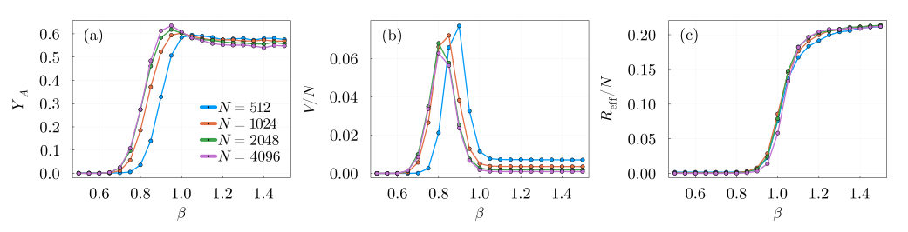
<figcaption class="paper-figure-caption"><b>Fig 3.</b> FIG. 3. Dynamical accessibility from normalized Gaussian initial conditions with T = N. (a) The late-time attention IPR YA shows the onset of attention condensation. (b) The intermediate peak in V/N signals a macroscopic spread of overlaps and the formation of a macroscopic cluster inside the condensation phase. (c) The effective rank Reff/N becomes finite only at larger β, where the macroscopic cluster is replaced by extensive microscopic fragmentation.</figcaption>
</figure>
<figure class="paper-figure-card">
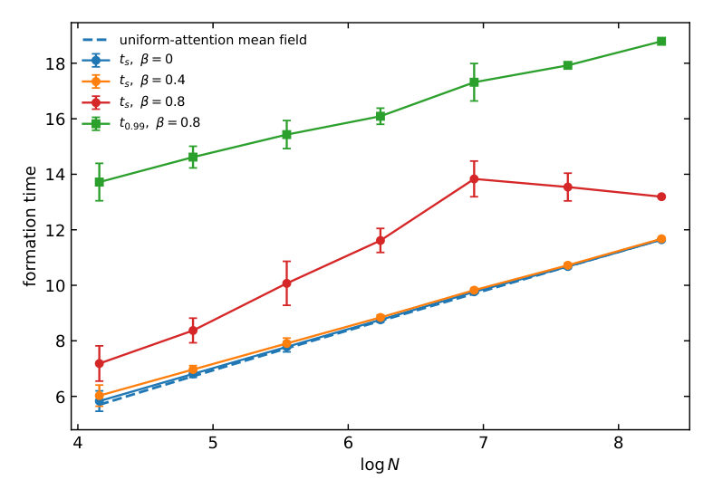
<figcaption class="paper-figure-caption"><b>Fig 4.</b> FIG. 1. Formation times from Gaussian random initial states. For β = 0 and β = 0.4, we characterize the formation time by ts = inf{t : s(t) ≥1/2}, where s(t) = N −1 P</figcaption>
</figure>
<figure class="paper-figure-card">
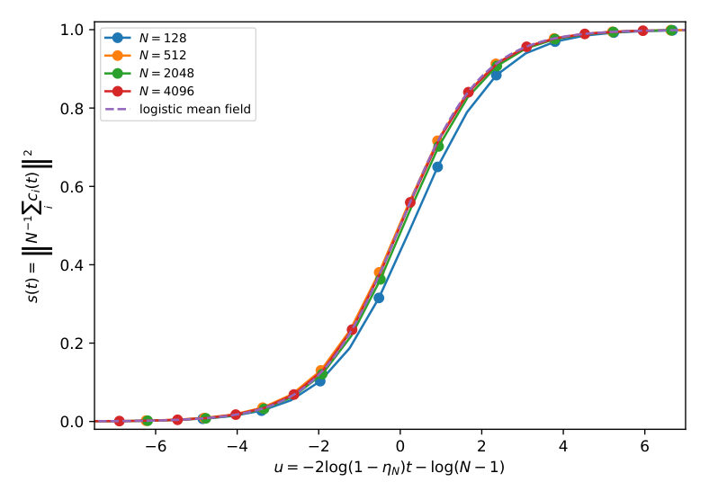
<figcaption class="paper-figure-caption"><b>Fig 5.</b> FIG. 2. Logistic collapse of the polarization dynamics at β = 0.4. Results for sizes up to N = 4096 closely follow the uniform-attention scaling function s(u) = (1 + e−u)−1.</figcaption>
</figure>
</div>

<p><strong>Summary.</strong> This paper analyzes self-attention mechanisms by mapping them onto a statistical mechanics model to understand their dynamic attractors. It identifies that attention condensation occurs above a critical sharpness threshold ($eta$), leading to stable, clustered fixed points characterized by an overlap gap. The work provides theoretical insights into how information processing in Transformers transitions between diffuse and highly structured collective states.</p>
<p><strong>Why it may be interesting.</strong> The framework connects concepts from condensed matter physics (phase transitions, order parameters) directly to the dynamics of large-scale neural network models, offering insights into emergent collective behavior in deep learning architectures.</p>
<details>
<summary>Detailed structure</summary>
<p><strong>Main problem.</strong> The study investigates the attractor structure, stability, and phase transitions of self-attention dynamics within Transformer layers by treating token interactions as a statistical mechanics problem.</p>
<p><strong>Main result.</strong> The system exhibits a dynamical attention-condensation transition above a finite threshold in attention sharpness ($eta$), leading to stable clustered fixed points characterized by an overlap gap ($\Delta > 0$).</p>
<p><strong>Method.</strong> The analysis employs mean-field approximations, studies the dynamics in the thermodynamic limit ($d \sim N 	o \infty$), and analyzes scaling laws for various observables.</p>
<p><strong>Model / system.</strong> The model is minimal normalized self-attention dynamics applied to $N$ token vectors $\mathbf{x}_i(t)$, governed by an iterative update rule dependent on the attention matrix derived from overlaps. The system transitions between diffuse, macroscopic clustered, and fragmented states.</p>
<p><strong>Key observables.</strong> Overlap Gap ($\Delta_a$), Attention Inverse Participation Ratios ($Y_A$, $V/N$), Effective Rank ($    ext{Reff}/N$), Largest Cluster Size ($m_{\max}/N$).</p>
<p><strong>Important parameters / regimes.</strong> Attention sharpness ($eta$), System size ($N$), Overlap gap ($\Delta$), Time ($t$).</p>
<p><strong>Assumptions / limitations.</strong> The analysis relies heavily on taking the thermodynamic limit ($d \sim N 	o \infty$) for stability proofs, and uses mean-field approximations.</p>
<p><strong>Figures summary.</strong> Figures illustrate noise-induced fragmentation scaling with $\alpha = eta\epsilon^2$, map out three dynamical regimes (diffuse, condensed, fragmented) vs. $eta$, and show time evolution plateaus at $T=N$ for Gaussian initializations.</p>
<p><strong>Paper structure.</strong> The paper progresses by defining the self-attention dynamics as a statistical mechanics problem, identifying key diagnostics like the overlap gap, analyzing the transition from diffuse to clustered states via condensation thresholds, and finally characterizing the stability and time evolution of these different attractor regimes.</p>
</details>
<details>
<summary>Abstract</summary>
<p>Transformer layers generate state-dependent interaction networks: token representations determine the attention matrix, which in turn updates the representations. We study this feedback in a minimal normalized self-attention dynamics and identify the overlap gap as the central quantity governing its attractor structure in the thermodynamic limit. When tokens form internally aligned clusters and their similarity to members of the same cluster exceeds that to every other cluster by a nonvanishing amount, inter-cluster attention is exponentially suppressed as the dimension increases. This mechanism produces a high-dimensional manifold of clustered fixed points, ranging from a few macroscopic clusters to extensive microscopic fragmentation, and also controls their stability against perturbations. Starting from an unstructured Gaussian state, we find that clustered states nucleate from the diffuse background only above a finite threshold in attention sharpness, giving rise to a dynamical attention-condensation transition.</p>
</details>
<p><sub><a href="#top">↑ back to top</a></sub></p>

<p><a id="paper-2608.08619"></a></p>
<h3 id="dissipation-engineered-dual-charger-quantum-batteries"><a href="http://arxiv.org/abs/2608.08619v1">Dissipation-engineered dual-charger quantum batteries</a></h3>
<p><strong>Authors:</strong> Yi-jia Yang, Yu-qiang Liu, Zheng Liu, Zhi-Hao Ma, Ming-Xing Luo, Chang-shui Yu<br>
<strong>Type:</strong> theory · <strong>Category:</strong> statistical mechanics · <strong>PDF:</strong> <a href="https://arxiv.org/pdf/2608.08619v1">https://arxiv.org/pdf/2608.08619v1</a><br>
<strong>Analysis basis:</strong> full PDF text, analyzed in chunks
<strong>Topic relevance:</strong> <code>driven-dissipative phase transition</code> <strong>3/5</strong> · <code>methods for driven-dissipative</code> <strong>3/5</strong> · <code>non-equilibrium universality</code> <strong>2/5</strong> · <code>Keldysh / 2PI / non-Gaussian methods</code> <strong>1/5</strong> · <code>analog quantum simulation</code> <strong>1/5</strong> · <code>correlated / nonlocal dissipation</code> <strong>1/5</strong> · <code>quantum measurements</code> <strong>1/5</strong> · <code>scars &amp; prethermalization</code> <strong>1/5</strong></p>
<div class="figure-strip-hint">↔ Scroll figures horizontally</div>
<div class="paper-figures-scroll">
<figure class="paper-figure-card">
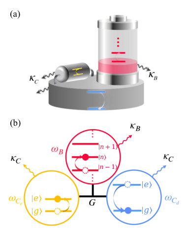
<figcaption class="paper-figure-caption"><b>Fig 1.</b> FIG. 1. Schematic dual-charger quantum battery (DQB). (a) System setup. A multilevel battery B with level spacing ωB is coupled to two detuned two-level chargers: a driver Cd with frequency ωCd and a cache Cc with frequency ωCc. Each subsystem is connected to an independent thermal reservoir with temperatures TCc &lt; TB &lt; TCd and dissipation rates κCc = κCd ≡κC and κB. (b) Effective three-body interac- tion. Under the resonance condition ωCd = ωCc + ωB, the interaction HCcCdB(t) couples |g, e, n−1⟩and |e, g, n⟩. In the forward process, one driver excitation is converted into one battery excitation and one cache excitation. Parameters are inspired by recent superconducting-circuit experiments...</figcaption>
</figure>
<figure class="paper-figure-card">
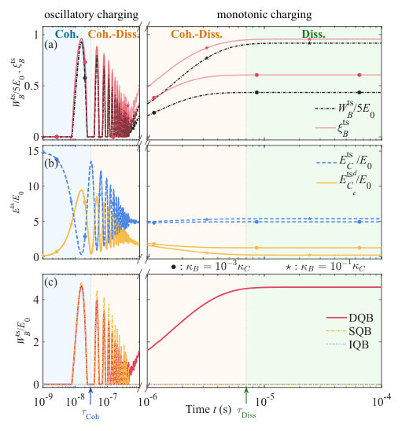
<figcaption class="paper-figure-caption"><b>Fig 2.</b> FIG. 2. Transient charging dynamics of a two-level DQB. (a) Battery ergotropy W ts B and stored-energy utilization ξts B. (b) Transient stored energies of the driver Cd and cache Cc for two dissipation ratios, κB = 10−3κC and κB = 10−1κC. (c) Comparison between the DQB, a single-charger quantum battery (SQB), and an independent-charger quantum battery (IQB) under the same autonomous dissipative setting. The left time window shows oscillatory charging dominated by co- herent exchange, while the right time window shows mono- tonic charging stabilized by dissipation. The shaded regions mark the coherence-dominated (Coh.), coherence–dissipation (Coh.–Diss.), and dissipation-dominated (Diss.)...</figcaption>
</figure>
<figure class="paper-figure-card">
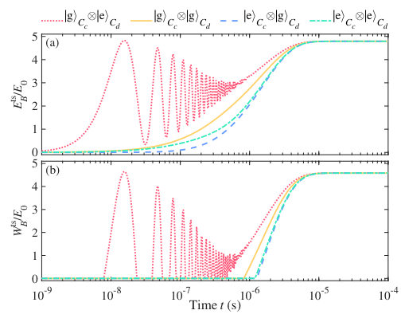
<figcaption class="paper-figure-caption"><b>Fig 3.</b> FIG. 3. Dependence on the initial charger preparation. Time evolution of (a) stored battery energy EB(t) and (b) ergotropy WB(t) for four initial charger states, with the battery initially in |0⟩B. The preparation |g⟩Cc ⊗|e⟩Cd matches the forward three-body transition and gives the strongest coherent onset, while all initial states relax to the same dissipatively stabilized steady state.</figcaption>
</figure>
<figure class="paper-figure-card">
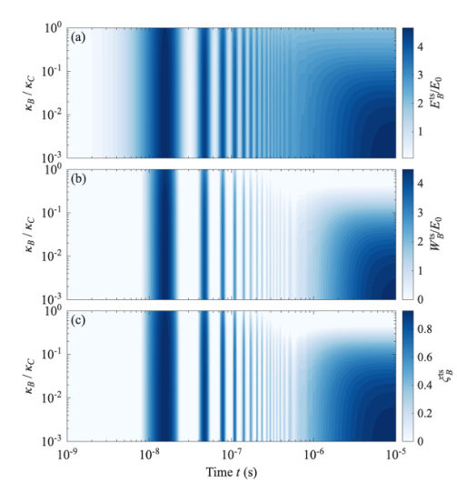
<figcaption class="paper-figure-caption"><b>Fig 4.</b> FIG. 4. Dependence on the dissipation ratio. Time evolu- tion of (a) stored battery energy EB(t), (b) ergotropy WB(t), and (c) stored-energy utilization ξB(t) for different dissipa- tion ratios κB/κC, with fixed driver-cache temperature bias. Smaller κB/κC suppresses direct battery relaxation and sta- bilizes larger steady-state ergotropy.</figcaption>
</figure>
<figure class="paper-figure-card">
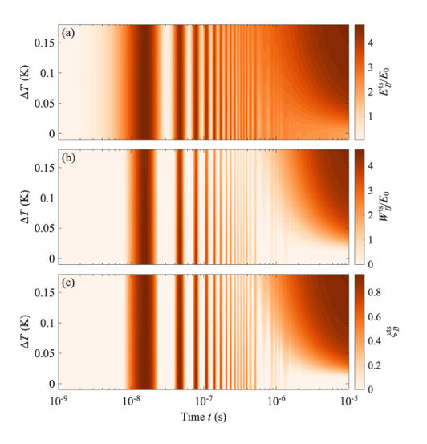
<figcaption class="paper-figure-caption"><b>Fig 5.</b> FIG. 5. Dependence on the driver-cache temperature bias. Time evolution of (a) stored battery energy EB(t), (b) er- gotropy WB(t), and (c) stored-energy utilization ξB(t) for dif- ferent temperature biases ∆T = TCd −TCc, with fixed dissipa- tion ratio κB/κC. A positive driver-cache bias favors the for- ward charger-assisted transition and stabilizes a population- inverted battery state.</figcaption>
</figure>
</div>

<p><strong>Summary.</strong> The paper introduces a novel dual-charger quantum battery architecture where controlled dissipation from thermal reservoirs is actively used as a resource. By coupling the battery to hot and cold reservoirs, the authors stabilize a non-equilibrium steady state that prevents energy backflow. This method proves dissipation engineering is a robust strategy for achieving stable and scalable quantum energy storage.</p>
<p><strong>Why it may be interesting.</strong> This work directly addresses non-equilibrium thermodynamics in quantum systems, providing a concrete mechanism (dissipation engineering) to achieve stable energy storage beyond simple coherent charging protocols, which is highly relevant for AMO physics and open quantum system dynamics.</p>
<details>
<summary>Detailed structure</summary>
<p><strong>Main problem.</strong> The central challenge is stabilizing useful stored energy in a quantum battery while suppressing detrimental coherent energy backflow.</p>
<p><strong>Main result.</strong> The authors demonstrate that engineering dissipation via coupled hot/cold reservoirs stabilizes a population-inverted, non-equilibrium steady state with finite ergotropy for scalable quantum energy storage.</p>
<p><strong>Method.</strong> The analysis uses open-system dynamics described by a Born–Markov–secular master equation to model the interaction between the battery and two reservoir-coupled chargers.</p>
<p><strong>Model / system.</strong> The system is a dual-charger quantum battery (DQB) consisting of an N-level battery coupled to a low-frequency cache and a high-frequency driver, all interacting with thermal reservoirs.</p>
<p><strong>Key observables.</strong> Stored energy ($E_B$), ergotropy ($W_B$, extractable work), stored-energy utilization ($\xi_B$), and the stationary heat current ($\dot{Q}_{	ext{ss}}$).</p>
<p><strong>Important parameters / regimes.</strong> The relative coupling rates ($\kappa_\mu$) and the temperature bias ($\Delta T = T_{C_d} - T_{C_c}$) are key parameters for optimizing performance.</p>
<p><strong>Assumptions / limitations.</strong> Assumes weak system–reservoir coupling, short reservoir correlation times (Markov limit), and utilizes a dispersive regime approximation when deriving effective interactions.</p>
<p><strong>Figures summary.</strong> Figures illustrate the comparison of charging dynamics between DQB, SQB, and IQB; show time evolution dependence on initial states for DQB; and demonstrate optimization by varying dissipation ratios or temperature bias.</p>
<p><strong>Paper structure.</strong> The paper first establishes the physical model and Hamiltonian, derives the master equation describing open-system dynamics, analyzes steady-state properties using reservoir engineering principles, and concludes by showing scalability metrics like linear scaling of energy with battery levels.</p>
</details>
<details>
<summary>Abstract</summary>
<p>Suppressing coherent energy backflow while maintaining extractable energy in a stable nonequilibrium state remains a central challenge for quantum energy storage. Here, we introduce a reservoir-engineered dual-charger quantum battery architecture, in which nonequilibrium dissipation is exploited as a control resource to stabilize useful stored energy. A hot-reservoir-coupled driver supplies excitations, while a cold-reservoir-coupled cache biases the resonant three-body transition toward charging and suppresses the dressed-state coherences responsible for energy backflow. This mechanism establishes a population-inverted steady state with finite ergotropy and converts reversible charger--battery exchange into persistent energy storage. For uniformly spaced multilevel batteries, we show that the stored energy and ergotropy scale approximately linearly with the number of accessible levels, while the stored-energy utilization approaches unity. The accompanying stationary heat current provides a thermodynamic signature of the charging regime. Our results demonstrate dissipation engineering as a strategy for achieving stable and scalable quantum energy storage beyond transient coherent charging protocols.</p>
</details>
<p><sub><a href="#top">↑ back to top</a></sub></p>

<p><a id="paper-2608.07723"></a></p>
<h3 id="emergent-non-markovian-nonlinear-qubit-from-collective-spin-interactions"><a href="http://arxiv.org/abs/2608.07723v1">Emergent Non-Markovian Nonlinear Qubit From Collective Spin Interactions</a></h3>
<p><strong>Authors:</strong> Gregory T. Carroll, Michael R. Geller, Andre Erpenbeck<br>
<strong>Type:</strong> theory · <strong>Category:</strong> quantum information and computing · <strong>PDF:</strong> <a href="https://arxiv.org/pdf/2608.07723v1">https://arxiv.org/pdf/2608.07723v1</a><br>
<strong>Analysis basis:</strong> full PDF text, analyzed in chunks
<strong>Topic relevance:</strong> <code>analog quantum simulation</code> <strong>3/5</strong> · <code>correlated / nonlocal dissipation</code> <strong>3/5</strong> · <code>quantum measurements</code> <strong>2/5</strong> · <code>Keldysh / 2PI / non-Gaussian methods</code> <strong>1/5</strong> · <code>Tavis-Cummings &amp; cavity-many-emitter</code> <strong>1/5</strong> · <code>driven-dissipative phase transition</code> <strong>1/5</strong> · <code>methods for driven-dissipative</code> <strong>1/5</strong> · <code>non-equilibrium universality</code> <strong>1/5</strong></p>
<div class="figure-strip-hint">↔ Scroll figures horizontally</div>
<div class="paper-figures-scroll">
<figure class="paper-figure-card">
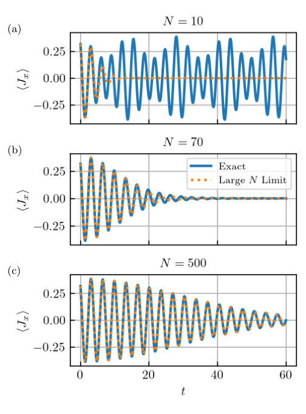
<figcaption class="paper-figure-caption"><b>Fig 1.</b> FIG. 1. Normalized expectation value of the x component of the angular momentum operator, ⟨Jx⟩/(N/2), as a func- tion of time for different system sizes, N = 10, 70, and 500. The solid lines show the exact finite N result obtained from Eq. (14), while the dashed lines correspond to the large N approximation given in Eq. (42).</figcaption>
</figure>
<figure class="paper-figure-card">
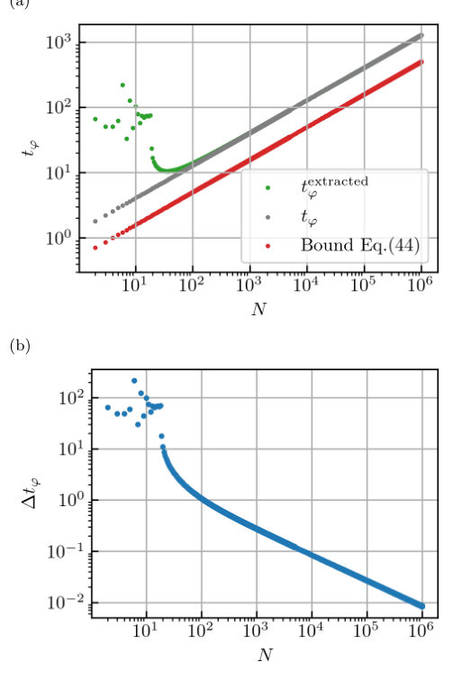
<figcaption class="paper-figure-caption"><b>Fig 2.</b> FIG. 2. Decoherence timescale as a function of system size N. The analytical prediction tφ from Eq. (43) is com- pared with the decoherence timescale extracted from the ex- act finite N numerical data, textracted φ . (a) Extracted de- coherence timescale together with the large N prediction from Eq. (43) and the corresponding lower bound for the decoherence timescale. (b) Absolute deviation between the analytical prediction and the numerically extracted value, ∆tφ = |tφ −textracted φ |.</figcaption>
</figure>
<figure class="paper-figure-card">
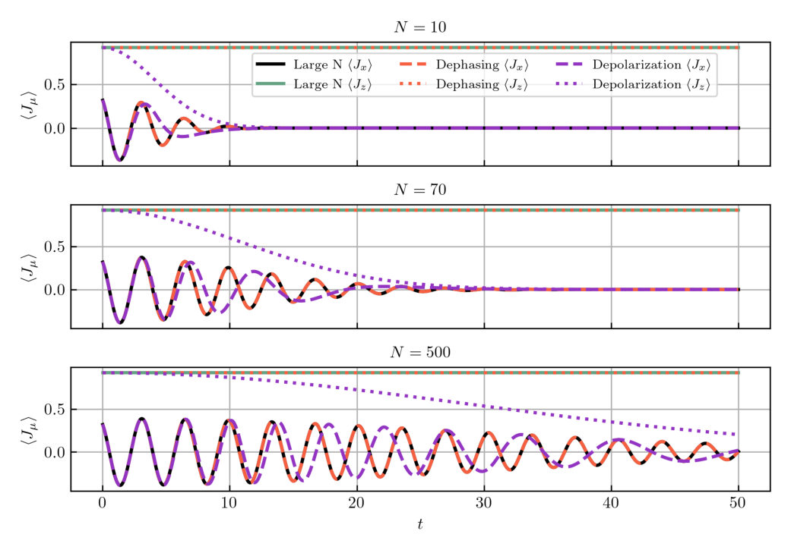
<figcaption class="paper-figure-caption"><b>Fig 3.</b> FIG. 3. Normalized collective-spin expectation values ⟨Jµ⟩/(N/2) for µ ∈{x, z} as functions of time for N = 10, 70, and 500. The solid black curves show the large-N result from Eq. (42). The orange and purple curves correspond to numerical solutions of the effective non-Markovian master equations with dephasing (Eq. 46) and isotropic depolarization (Eq. 47), respectively.</figcaption>
</figure>
</div>

<p><strong>Summary.</strong> The paper demonstrates that collective spin interactions within a closed many-body system can effectively mimic coupling to an environment, generating non-Markovian dephasing. By analyzing finite-size corrections to the mean-field limit, the authors derive an effective open-system description for the reduced qubit dynamics. This provides a powerful theoretical tool linking fundamental quantum dynamics to noise characterization in quantum information.</p>
<p><strong>Why it may be interesting.</strong> This work provides a rare microscopic derivation of non-Markovian noise—a key challenge in quantum computing hardware characterization—directly from the Hamiltonian dynamics of an isolated system.</p>
<details>
<summary>Detailed structure</summary>
<p><strong>Main problem.</strong> The study investigates how an effective non-Markovian quantum channel can emerge intrinsically from a closed, interacting many-body system, bypassing the need for explicit environmental coupling.</p>
<p><strong>Main result.</strong> Finite-size corrections to the large-$N$ mean-field limit of the collective spin model generate an emergent non-Markovian dephasing process characterized by Gaussian coherence decay with a timescale proportional to $\sqrt{N}$.</p>
<p><strong>Method.</strong> The authors derive this effect by analyzing the double large-$N$ limit ($\chi = g/N$) and calculating the leading finite-$N$ corrections using Maclaurin series expansions of time-evolution functions.</p>
<p><strong>Model / system.</strong> The system is modeled using the Kitagawa-Ueda one-axis twisting model, $H=\chi J_z^2$, which describes collective spin dynamics. The analysis reduces the complex many-body problem to an effective nonlinear qubit description.</p>
<p><strong>Key observables.</strong> Bloch vector coherence decay (Gaussian form), magnetization $\langle\vec{J}
angle$, and the characteristic dephasing timescale $t_\phi$.</p>
<p><strong>Important parameters / regimes.</strong> The system size $N$ is crucial, as the non-Markovian effects become apparent in finite-$N$ corrections; the scaling limit involves $\chi \propto 1/N$.</p>
<p><strong>Assumptions / limitations.</strong> The analysis assumes that the leading finite-$N$ corrections can be accurately captured by a Maclaurin series expansion of the time evolution function.</p>
<p><strong>Figures summary.</strong> Figures compare exact finite-$N$ simulations against large-$N$ approximations, demonstrating the emergence of non-Markovian decay and showing that pure dephasing successfully models the dynamics better than isotropic depolarization.</p>
<p><strong>Paper structure.</strong> The paper establishes the physical model (KU Hamiltonian), identifies the necessary scaling limit ($\chi=g/N$), derives the leading finite-$N$ corrections to the mean-field theory, and then validates this resulting non-Markovian dephasing channel against exact numerical simulations.</p>
</details>
<details>
<summary>Abstract</summary>
<p>Open-system descriptions are typically introduced by coupling a quantum system to an external environment. Here we show that a closed interacting many-body system can itself generate a controlled non-Markovian quantum channel acting on a reduced nonlinear qubit through finite-size corrections to a nonlinear mean-field limit. We demonstrate this using the Kitagawa-Ueda one-axis twisting model, $H=χJ_z^2$, a paradigmatic model of collective spin dynamics, spin squeezing, and two-component Bose-Einstein condensates. Although the large-$N$ regime of this model has been extensively studied, the conventional fixed-$χ$ scaling does not yield a nontrivial dynamical large-$N$ limit. In this paper, we investigate a complementary large-$N$ formulation obtained from the double limit $N\rightarrow\infty$ and $χ\rightarrow O(g/N)$, where $g$ is a coupling constant. We derive the leading finite-$N$ corrections to this limit and show that they correspond to an emergent non-Markovian dephasing process, producing a Gaussian decay of the Bloch-vector coherence with characteristic timescale $t_\varphi\geq\sqrt{N}/(2g)$. Exact finite-$N$ calculations demonstrate that this effective open-system description becomes quantitatively accurate for systems containing on the order of one hundred qubits. The resulting framework provides a microscopic realization of non-Markovian dephasing generated intrinsically by a closed many-body system and enables efficient simulation of collective quantum dynamics beyond unitary mean-field theory. These results link the long-studied phenomenon of phase diffusion in atomic ensembles and Bose-Einstein condensates to the growing effort to characterize non-Markovian, beyond-Lindblad noise in quantum computing hardware, providing a rare case in which such a noise channel is derived from microscopic dynamics rather than fit phenomenologically.</p>
</details>
<p><sub><a href="#top">↑ back to top</a></sub></p>

<p><a id="paper-2608.08205"></a></p>
<h3 id="out-of-equilibrium-inhomogeneous-xx-chains-exact-results-and-the-hydrodynamic-limit"><a href="http://arxiv.org/abs/2608.08205v1">Out-of-equilibrium inhomogeneous XX chains: Exact results and the hydrodynamic limit</a></h3>
<p><strong>Authors:</strong> Vincenzo Alba, Federico Rottoli<br>
<strong>Type:</strong> theory · <strong>Category:</strong> statistical mechanics · <strong>PDF:</strong> <a href="https://arxiv.org/pdf/2608.08205v1">https://arxiv.org/pdf/2608.08205v1</a><br>
<strong>Analysis basis:</strong> full PDF text, analyzed in chunks
<strong>Topic relevance:</strong> <code>methods for driven-dissipative</code> <strong>3/5</strong> · <code>non-equilibrium universality</code> <strong>3/5</strong> · <code>Keldysh / 2PI / non-Gaussian methods</code> <strong>2/5</strong> · <code>driven-dissipative phase transition</code> <strong>2/5</strong> · <code>Frenkel-Kontorova</code> <strong>1/5</strong> · <code>analog quantum simulation</code> <strong>1/5</strong> · <code>scars &amp; prethermalization</code> <strong>1/5</strong></p>
<div class="figure-strip-hint">↔ Scroll figures horizontally</div>
<div class="paper-figures-scroll">
<figure class="paper-figure-card">
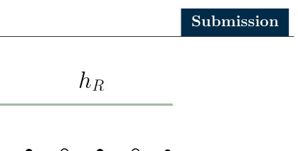
<figcaption class="paper-figure-caption"><b>Fig 1.</b> Figure 1: Setup employed in this work. We consider the inhomogeneous tight-binding chain with two different magnetic fields (chemical potentials) hL and hR in the two semi- infinite halves of the chain. We consider unitary dynamics from several initial states. The figure shows the inhomogeneous N´eel state in which the right-half of the chain is prepared in the N´eel state and the left part is in the fermionic vacuum state.</figcaption>
</figure>
<figure class="paper-figure-card">
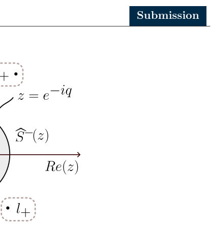
<figcaption class="paper-figure-caption"><b>Fig 2.</b> Figure 2: Riemann-Hilbert problem bS+(z) = f(z)bS−(z)+g(z) (cf. (37)) for the functions bS±(z) = bS± k,q, on the unit circle C with z = e−iq. The functions f(z) and g(z) are defined in (37). We denote with l± and r± the zeros and the poles of f(z), respectively.</figcaption>
</figure>
<figure class="paper-figure-card">
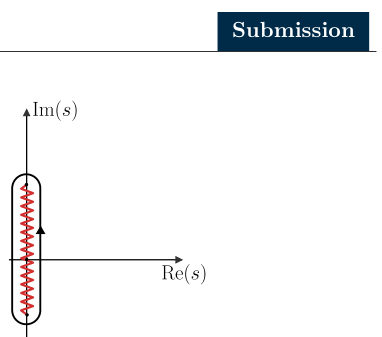
<figcaption class="paper-figure-caption"><b>Fig 3.</b> Figure 3: (Left) Contour employed to compute the inverse Laplace transform in (52). The wiggly vertical line is a branch cut, and γ is a positive real part to avoid singularities. (Right) The contour in the left panel is deformed to wrap around the branch cut.</figcaption>
</figure>
<figure class="paper-figure-card">
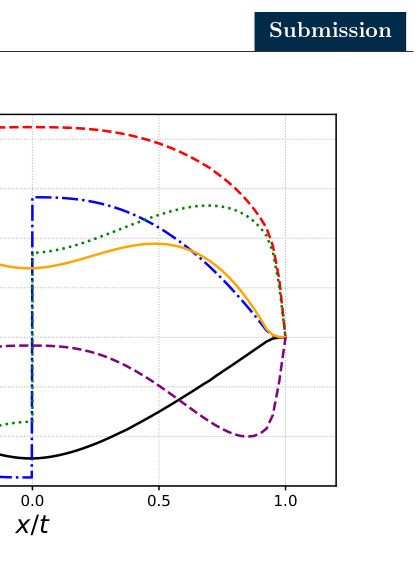
<figcaption class="paper-figure-caption"><b>Fig 4.</b> Figure 4: Dynamics of the two-point correlation functions Gxy(t) for y = x + j, with j = 1, 2, 3. We show both the real and imaginary parts of the correlator versus x/t. The curves are the analytical predictions obtained in Section 4 in the hydrodynamic limit x, t →∞with fixed x/t. We focus on the inhomogeneous XX chain with hL = 1 and hR = 1/3. The results are for the quench from the initial state (25), in which the right- part of the chain is prepared in the N´eel state and the left in the vacuum state.</figcaption>
</figure>
<figure class="paper-figure-card">
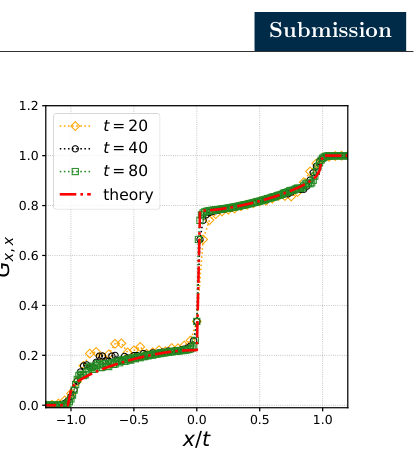
<figcaption class="paper-figure-caption"><b>Fig 5.</b> Figure 5: Dynamics of the fermion density after the quenches from the state (25) (left panel) and (24) (right panel) in the inhomogeneous XX chain with hL = 1 and hR = 1/3. The symbols are exact numerical data obtained by solving the system (17) for several times. The dashed-dotted line is the analytic result in the hydrodynamic limit. The results are for the XX chain with hL = 1 and hR = 1/3.</figcaption>
</figure>
</div>

<p><strong>Summary.</strong> This paper derives exact analytical solutions for the out-of-equilibrium dynamics of an inhomogeneous XX chain following a quantum quench. By mapping the problem to a Riemann-Hilbert formulation, the authors provide explicit formulas for correlation functions, especially in the asymptotic hydrodynamic limit. This advances the theoretical understanding of non-equilibrium transport in structured quantum many-body systems.</p>
<p><strong>Why it may be interesting.</strong> This work provides rigorous analytical tools (RHP) to calculate non-equilibrium observables like correlations across interfaces, which is crucial for understanding energy/information transport in structured quantum materials.</p>
<details>
<summary>Detailed structure</summary>
<p><strong>Main problem.</strong> The study focuses on determining the exact out-of-equilibrium dynamics of fermionic correlation functions following a quantum quench in an inhomogeneous XX chain.</p>
<p><strong>Main result.</strong> Exact analytic expressions for two-point correlation functions are derived using Riemann-Hilbert methods, yielding explicit formulas in the hydrodynamic limit that match numerical simulations.</p>
<p><strong>Method.</strong> The problem is mapped to a Riemann-Hilbert problem on the unit circle via Fourier and Laplace transforms, allowing for an exact analytical solution of the fermionic correlation function.</p>
<p><strong>Model / system.</strong> The system is the XX chain subjected to a step-like magnetic field, which maps to an inhomogeneous tight-binding chain described by a quadratic fermionic Hamiltonian. The dynamics are studied after quenching from various initial product states.</p>
<p><strong>Key observables.</strong> Two-point fermionic correlation function Gxy(t), reflection (R) and transmission (T) amplitudes across the inhomogeneity.</p>
<p><strong>Important parameters / regimes.</strong> The hydrodynamic limit ($x, y, t 	o \infty$ with fixed ratios); magnetic field strengths ($h_L, h_R$).</p>
<p><strong>Assumptions / limitations.</strong> For the dynamics, the solution relies on factorizing the correlation matrix and solving the resulting integral equation via RHP techniques.</p>
<p><strong>Figures summary.</strong> Figures illustrate the setup of the inhomogeneous chain and show numerical data for the fermionic correlator |Gxy| compared against the derived hydrodynamic limit result.</p>
<p><strong>Paper structure.</strong> The paper proceeds by first analyzing single-particle scattering to find transmission/reflection coefficients, then deriving the dynamics of the correlation matrix using linear equations of motion, solving this via a Riemann-Hilbert problem, and finally presenting results in both finite time and the asymptotic hydrodynamic limit.</p>
</details>
<details>
<summary>Abstract</summary>
<p>We study the out-of-equilibrium dynamics in the XX chain with step-like magnetic field, which maps to an inhomogeneous tight-binding chain after Jordan-Wigner transformation. We obtain exact analytic expressions for the fermionic two-point correlation function after a quantum quench from several initial product states, both homogeneous and inhomogeneous ones. This is achieved by using a combination of Fourier and Laplace transforms, which al low us to map the problem to a standard Riemann-Hilbert problem on the unit circle. For arbitrary positions and times the correlators are not expressed in terms of elementary functions. However, in the hydrodynamic limit $x,y,t\to\infty$ with fixed ratios, we provide explicit formulas that depend only on the effective transmission coefficient across the origin. We benchmark our analytic predictions against exact numerical simulations and find excellent agreement in the hydrodynamic limit, apart from finite-time corrections.</p>
</details>
<p><sub><a href="#top">↑ back to top</a></sub></p>

<p><a id="paper-2608.09297"></a></p>
<h3 id="pseudo-distributions-thermodynamic-geometry-and-an-empirical-application"><a href="http://arxiv.org/abs/2608.09297v1">Pseudo-Distributions: Thermodynamic Geometry and an Empirical Application</a></h3>
<p><strong>Authors:</strong> Negin Bayrami, Hosein Mohammadzadeh, Hamzeh Agahi, Hossein Mehri-Dehnavi, Zahra Ebadi<br>
<strong>Type:</strong> both · <strong>Category:</strong> statistical mechanics · <strong>PDF:</strong> <a href="https://arxiv.org/pdf/2608.09297v1">https://arxiv.org/pdf/2608.09297v1</a><br>
<strong>Analysis basis:</strong> full PDF text, analyzed in chunks
<strong>Topic relevance:</strong> <code>non-equilibrium universality</code> <strong>3/5</strong> · <code>Keldysh / 2PI / non-Gaussian methods</code> <strong>2/5</strong> · <code>driven-dissipative phase transition</code> <strong>2/5</strong> · <code>methods for driven-dissipative</code> <strong>2/5</strong> · <code>analog quantum simulation</code> <strong>1/5</strong> · <code>correlated / nonlocal dissipation</code> <strong>1/5</strong> · <code>quantum measurements</code> <strong>1/5</strong> · <code>scars &amp; prethermalization</code> <strong>1/5</strong></p>
<div class="figure-strip-hint">↔ Scroll figures horizontally</div>
<div class="paper-figures-scroll">
<figure class="paper-figure-card">
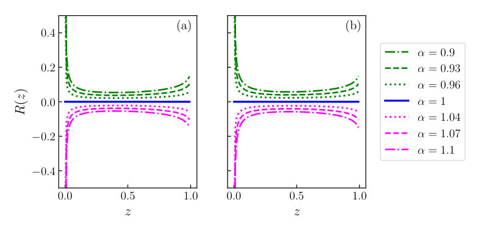
<figcaption class="paper-figure-caption"><b>Fig 1.</b> FIG. 1: Thermodynamic scalar curvature R(z) as a function of the fugacity z for different values of the pseudo-generalization parameter α. Panel (a) corresponds to the pseudo-generalized exponential model obtained directly from the PDF, while panel (b) represents the model constructed by pseudo-generalizing the CDF. In both cases, α &lt; 1 leads to positive curvature, α &gt; 1 results in negative curvature, and the classical exponential limit α = 1 yields vanishing curvature.</figcaption>
</figure>
<figure class="paper-figure-card">
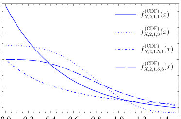
<figcaption class="paper-figure-caption"><b>Fig 2.</b> FIG. 3: Graphs of f (CDF) X,λ,q,α (x) for λ = 2 and some different values of q and α.</figcaption>
</figure>
<figure class="paper-figure-card">
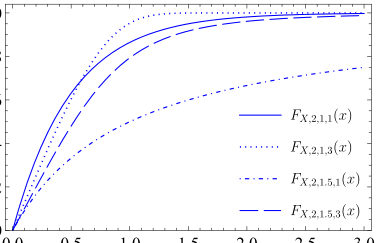
<figcaption class="paper-figure-caption"><b>Fig 3.</b> FIG. 2: Graphs of FX,λ,q,α (x) for λ = 2 and some different values of q and α.</figcaption>
</figure>
<figure class="paper-figure-card">
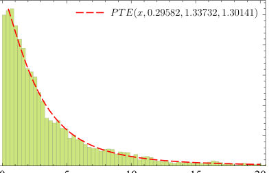
<figcaption class="paper-figure-caption"><b>Fig 4.</b> FIG. 5: The distribution of absolute difference of WTI crude oil, from its last 100 days moving average. The histogram obtained from WTI crude oil daily price in period of 1986/01/02 to 2017/07/03.</figcaption>
</figure>
<figure class="paper-figure-card">
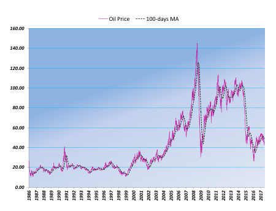
<figcaption class="paper-figure-caption"><b>Fig 5.</b> FIG. 4: The WTI crude oil, Oklahoma, dollars per barrel, daily price (full curve), and its 100 days moving average (dashed curve), in period 1986/01/02 - 2017/07/03.</figcaption>
</figure>
</div>

<p><strong>Summary.</strong> This work introduces a novel pseudo-analytic framework based on g-calculus to generalize statistical distributions beyond standard nonextensive models. It analyzes the thermodynamic geometry associated with these new distributions and demonstrates their superior ability to model heavy-tailed fluctuations observed in real-world financial data like oil prices.</p>
<p><strong>Why it may be interesting.</strong> While the application is finance, the underlying mathematical tools—generalized entropy frameworks and geometric analysis of equilibrium states—are highly relevant for characterizing complex, non-equilibrium dynamics in many-body quantum systems.</p>
<details>
<summary>Detailed structure</summary>
<p><strong>Main problem.</strong> The paper develops a pseudo-analytic framework using g-calculus to construct generalized statistical distributions, aiming to systematically extend nonextensive statistical mechanics.</p>
<p><strong>Main result.</strong> The proposed pseudo-distributions provide a superior fit for analyzing heavy-tailed fluctuations in financial data (WTI oil prices) and reveal that the thermodynamic scalar curvature is governed by the generator deformation parameter at leading order.</p>
<p><strong>Method.</strong> Methods include developing g-calculus structures, calculating thermodynamic geometry using the Ruppeiner metric, and performing empirical model comparison using information criteria (AIC/BIC).</p>
<p><strong>Model / system.</strong> The theoretical framework applies to general statistical ensembles, tested both by analyzing ideal gas thermodynamics in D dimensions and empirically by fitting absolute deviations of WTI crude oil prices.</p>
<p><strong>Key observables.</strong> Thermodynamic scalar curvature ($R$), goodness-of-fit metrics (AIC/BIC), and the distribution function itself.</p>
<p><strong>Important parameters / regimes.</strong> Generator deformation parameter ($\alpha$), nonextensivity parameter ($q$), and the fugacity parameter ($z$).</p>
<p><strong>Assumptions / limitations.</strong> The framework assumes $g$-calculus is applicable via a monotone generator function, and analyses often rely on perturbative expansions around classical limits.</p>
<p><strong>Figures summary.</strong> Figure 4 shows WTI oil price fluctuations vs. moving average; Figure 5 plots the fitted pseudo-nonextensive Tsallis distribution to the absolute deviation of WTI prices from its moving average.</p>
<p><strong>Paper structure.</strong> The paper progresses by introducing g-calculus, generalizing distributions at PDF/CDF levels, investigating thermodynamic geometry via curvature calculations, and concluding with empirical applications to financial time series data.</p>
</details>
<details>
<summary>Abstract</summary>
<p>We develop a consistent pseudo-analytic framework based on $g$-calculus for constructing deformed statistical distributions. By mapping standard algebraic operations through a monotone generator function, we systematically derive the associated pseudo-logarithmic and pseudo-exponential structures. Applying this formalism, we introduce a new family of pseudo-distributions that generalizes nonextensive statistical mechanics at both the probability density and cumulative distribution levels, recovering classical and standard nonextensive statistics as limiting cases. We investigate the thermodynamic geometry of the proposed models using the Ruppeiner metric on the equilibrium manifold. A perturbative analysis around the classical limit reveals that, to leading order, the thermodynamic scalar curvature is governed solely by the generator deformation parameter, while the nonextensivity parameter remains decoupled. To evaluate the empirical robustness of the framework, we apply the model to analyze the absolute deviations of daily West Texas Intermediate crude oil prices from their hundred-day moving average. Model comparison based on information criteria demonstrates that the proposed pseudo-distributions provide a superior description of these high-frequency financial fluctuations and their heavy-tailed characteristics compared to standard benchmarks. These results suggest that $g$-calculus offers a flexible and physically grounded mathematical tool for generating deformed statistics and analyzing their geometric properties.</p>
</details>
<p><sub><a href="#top">↑ back to top</a></sub></p>

<p><a id="paper-2608.09705"></a></p>
<h3 id="state-diagnostics-of-complexity-in-open-quantum-systems"><a href="http://arxiv.org/abs/2608.09705v1">State Diagnostics of Complexity in Open Quantum Systems</a></h3>
<p><strong>Authors:</strong> Komal Sah, Fabio Anza, Alexandra M. Jurgens, James P. Crutchfield<br>
<strong>Type:</strong> theory · <strong>Category:</strong> statistical mechanics · <strong>PDF:</strong> <a href="https://arxiv.org/pdf/2608.09705v1">https://arxiv.org/pdf/2608.09705v1</a><br>
<strong>Analysis basis:</strong> full PDF text, analyzed in chunks
<strong>Topic relevance:</strong> <code>driven-dissipative phase transition</code> <strong>3/5</strong> · <code>methods for driven-dissipative</code> <strong>3/5</strong> · <code>correlated / nonlocal dissipation</code> <strong>2/5</strong> · <code>quantum measurements</code> <strong>2/5</strong> · <code>Keldysh / 2PI / non-Gaussian methods</code> <strong>1/5</strong> · <code>analog quantum simulation</code> <strong>1/5</strong> · <code>non-equilibrium universality</code> <strong>1/5</strong></p>
<div class="figure-strip-hint">↔ Scroll figures horizontally</div>
<div class="paper-figures-scroll">
<figure class="paper-figure-card">
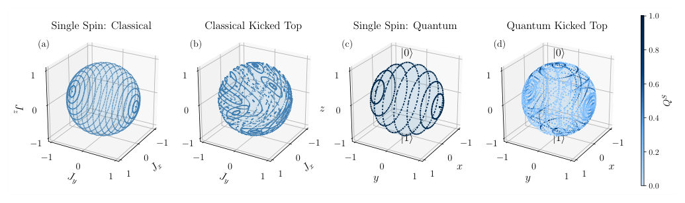
<figcaption class="paper-figure-caption"><b>Fig 1.</b> Figure 1: From periodic motion to interaction-induced complexity. (a) Classical single-spin precession (κ = 0). (b) Classical kicked top (κ &gt; 0) showing trajectory deformation. (c) Closed single-spin quantum evolution with periodic motion on CP 1. (d) Quantum kicked top, where interactions deform this periodic motion into an ensemble spreading over CP 1.</figcaption>
</figure>
<figure class="paper-figure-card">
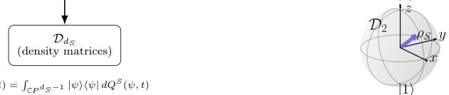
<figcaption class="paper-figure-caption"><b>Fig 2.</b> Figure 2: Left: Relation between pure states, GQS, and density matrices. Right: For a single-qubit subsystem, interactions with different environment sizes (LE = 2, 3, 4, dE = 2LE) produce distinct ensembles on CP 1 with the same reduced density matrix ρS, showing that ρS does not capture the geometric structure induced by environment conditioning.</figcaption>
</figure>
<figure class="paper-figure-card">
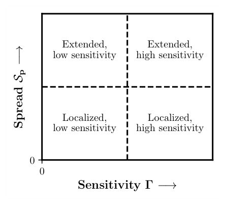
<figcaption class="paper-figure-caption"><b>Fig 3.</b> Figure 3: Schematic classification of subsystem dynamics in the nonnegative-Γ regime using the pair (Γ, Sp). Increasing Γ indicates greater sensitivity to initial states, while increasing Sp indicates broader long-time exploration of state space. The four quadrants distinguish localized low-sensitivity, extended low-sensitivity, localized high-sensitivity, and extended high-sensitivity dynamics.</figcaption>
</figure>
<figure class="paper-figure-card">

<figcaption class="paper-figure-caption"><b>Fig 4.</b> Figure 4: Evolution of two neighboring geometric quantum states in the three-qubit quantum kicked top. Columns show environment-conditioned ensembles (GQSs) on CP 1 after tn = 0, 1, 2, 3, 4, and 200 Floquet kicks, while rows correspond to interaction strengths κ. The separation W1(tn) = dF S is preserved for noninteracting dynamics (κ = 0). For κ &gt; 0, W1(tn) varies in time, indicating loss of invariance as the ensembles deform and spread across state space, with stronger effects at larger κ.</figcaption>
</figure>
<figure class="paper-figure-card">

<figcaption class="paper-figure-caption"><b>Fig 5.</b> Figure 5: Distinguishability growth and phase-space structure in the three-qubit kicked top. (a) Time evolution of the average relative distance between perturbed and unperturbed GQSs for increasing kick strength κ, starting from a spin-coherent state at (θ, ϕ) = (π/2 + 0.5, π/2). (b) Corresponding distinguishability measure Γ as a function of κ. (c,d) Classical maximal Lyapunov exponent λmax over initial conditions (θ, ϕ) for κ = 0.5 and 2.5. (e,f) Quantum distinguishability measure Γ evaluated over spin-coherent product states for the same interaction strengths. Increasing κ enhances both λmax in the classical case and the distinguishability growth Γ in the quantum case. The classical and...</figcaption>
</figure>
</div>

<p><strong>Summary.</strong> The paper develops a geometric framework using Geometric Quantum States (GQS) to diagnose complexity in open quantum systems. By introducing Wasserstein distance and State-Space Coverage Index, it quantifies how interactions reshape the underlying pure-state geometry. The diagnostics successfully characterize enhanced sensitivity and broader exploration in models like the kicked top, highlighting fundamental roles for system parity.</p>
<p><strong>Why it may be interesting.</strong> This work provides a powerful geometric toolkit—moving beyond simple entanglement measures—to quantify dynamical complexity in open systems by analyzing how probability mass evolves on the state space manifold.</p>
<details>
<summary>Detailed structure</summary>
<p><strong>Main problem.</strong> The study focuses on quantifying how complexity emerges in finite-size quantum systems as their dynamics transition from coherent, closed evolution to interacting, effectively open behavior.</p>
<p><strong>Main result.</strong> Both a distinguishability measure (Wasserstein distance) and a State-Space Coverage Index increase with interaction strength, revealing geometric signatures of dynamical complexity. Parity symmetry dictates that integer-spin systems often show greater sensitivity than half-integer-spin systems.</p>
<p><strong>Method.</strong> The authors employ a Geometric Quantum State (GQS) framework, representing mixed states as probability measures on the complex projective Hilbert space to track ensemble geometry lost in standard density matrix descriptions.</p>
<p><strong>Model / system.</strong> The analysis uses open quantum systems modeled by partitioning the total Hilbert space into a system (S) and an environment (E). The diagnostics are applied specifically to the quantum kicked top model, varying interaction strength ($\kappa$) and system size ($L$).</p>
<p><strong>Key observables.</strong> Distinguishability measure (Wasserstein distance $W_p$), State-Space Coverage Index (SSCI), and geometric measures derived from GQSs.</p>
<p><strong>Important parameters / regimes.</strong> Interaction strength ($\kappa$), environment size, and parity symmetry of the system spin ($L$).</p>
<p><strong>Assumptions / limitations.</strong> The primary assumption is that using GQSs—probability measures on $  ext{CP}^{d_S-1}$—is necessary to preserve ensemble structure, as standard density matrices lose this geometric information.</p>
<p><strong>Figures summary.</strong> Figures illustrate the transition from simple periodic motion ($\kappa=0$) to complex spreading with increasing interaction strength. They also compare dynamics for different parity systems and show how $\Gamma$ and $S_1$ quantify sensitivity and coverage in phase space.</p>
<p><strong>Paper structure.</strong> The paper first establishes the need for GQSs over density matrices, then introduces two complementary diagnostics (Wasserstein distance and SSCI) to geometrically characterize complexity. Finally, these tools are applied to the quantum kicked top model to analyze the role of interaction strength and spin parity.</p>
</details>
<details>
<summary>Abstract</summary>
<p>We study the emergence of complexity in finite-size quantum systems as their dynamics transition from closed and coherent evolution to interacting and effectively open behavior. Using a state-based geometric framework, we represent mixed quantum states as probability measures on complex projective Hilbert space. This representation allows us to track how interactions reshape the underlying pure-state geometry. We introduce two complementary diagnostics: a distinguishability measure, based on the Wasserstein distance between probability-measure representations of mixed states, that quantifies sensitivity to initial states, and a state-space coverage index that measures long-time exploration of the subsystem state space. These diagnostics provide a geometric perspective on the emergence and evolution of quantum dynamical complexity. When applied to the quantum kicked top, both diagnostics generally increase with interaction strength. Their dependence on environment size is structured by parity symmetry, with integer-spin systems often exhibiting greater sensitivity and state-space coverage than half-integer-spin systems. These results highlight finite-size quantum effects and provide a geometric approach to quantifying dynamical complexity deep in the quantum regime</p>
</details>
<p><sub><a href="#top">↑ back to top</a></sub></p>

<p><a id="paper-2608.09455"></a></p>
<h3 id="a-non-markovian-approach-to-spin-phonon-coherence-and-the-breakdown-of-the-markovian-approximation"><a href="http://arxiv.org/abs/2608.09455v1">A non-Markovian approach to spin-phonon coherence and the breakdown of the Markovian approximation</a></h3>
<p><strong>Authors:</strong> Mohamed Belhassen, Tim Schröder, Gregor Pieplow<br>
<strong>Type:</strong> theory · <strong>Category:</strong> quantum information and computing · <strong>PDF:</strong> <a href="https://arxiv.org/pdf/2608.09455v1">https://arxiv.org/pdf/2608.09455v1</a><br>
<strong>Analysis basis:</strong> full PDF text, analyzed in chunks
<strong>Topic relevance:</strong> <code>methods for driven-dissipative</code> <strong>3/5</strong> · <code>Keldysh / 2PI / non-Gaussian methods</code> <strong>2/5</strong> · <code>QC/QI experiment</code> <strong>2/5</strong> · <code>driven-dissipative phase transition</code> <strong>2/5</strong> · <code>analog quantum simulation</code> <strong>1/5</strong> · <code>correlated / nonlocal dissipation</code> <strong>1/5</strong> · <code>quantum measurements</code> <strong>1/5</strong></p>
<div class="figure-strip-hint">↔ Scroll figures horizontally</div>
<div class="paper-figures-scroll">
<figure class="paper-figure-card">

<figcaption class="paper-figure-caption"><b>Fig 1.</b> Figure 1: Group IV vacancy in a sawfish resonator [10]. bk’s are the phonon bath modes, with dispersion relation in bulk diamond plotted in the lower right inset, inter- acting with the color center energy levels described in the Hamiltonian Eq. (1). The magnetic field B is ap- plied with an angle θ with respect to the color center symmetry axis and splits the orbital spin degeneracy.</figcaption>
</figure>
<figure class="paper-figure-card">

<figcaption class="paper-figure-caption"><b>Fig 2.</b> Figure 2: Expectation value ⟨σy(t)⟩for SnV with orbital splitting ∆≈903 GHz with fitting function Eq. (25)</figcaption>
</figure>
<figure class="paper-figure-card">

<figcaption class="paper-figure-caption"><b>Fig 3.</b> Figure 3: Coherence time T2 for SnV with Hahn-echo as a function of Temperature compared to experiments. Data reported in [18] based on [19]</figcaption>
</figure>
<figure class="paper-figure-card">

<figcaption class="paper-figure-caption"><b>Fig 4.</b> Figure 4: Regularized spectral density. Exponential reg- ularization with bath cutoff frequency ωc = 5 GHz and Brownian spectral density with distribution linewidth Γ = 0.15 GHz</figcaption>
</figure>
<figure class="paper-figure-card">

<figcaption class="paper-figure-caption"><b>Fig 5.</b> Figure 5: Coherence time T2 of SiV and SnV as a func- tion of wc compared to experiments. For SiV, mea- sured at T = 3.6 K and orbital splitting ≈50 GHz [23]. For SnV, measured at T ≈3.5 K and orbital splitting ∆≈903 GHz [19]. The dash lines are the experiment measurement for SiV T2 = 114.19 ns and SnV T2 = 46 µs</figcaption>
</figure>
</div>

<p><strong>Summary.</strong> This paper investigates how lattice vibrations (phonons) cause electronic spin decoherence in diamond color centers used as quantum bits. The authors demonstrate that standard Markovian approximations fail because they ignore the system's memory of past interactions with the bath. By employing non-Markovian techniques, they accurately model coherence times that match experimental observations.</p>
<p><strong>Why it may be interesting.</strong> This work is highly relevant for AMO physicists working on open quantum systems because it provides a detailed, physically motivated case study demonstrating the necessity of retaining memory effects (non-Markovian dynamics) when modeling solid-state qubits interacting with vibrational baths.</p>
<details>
<summary>Detailed structure</summary>
<p><strong>Main problem.</strong> The study addresses phonon-induced electronic spin decoherence, specifically investigating when and why standard Markovian approximations fail to accurately predict qubit coherence times.</p>
<p><strong>Main result.</strong> Non-Markovian treatments are necessary to capture the system's memory effects, leading to predicted coherence times that align much better with experimental measurements than the simpler Markovian models.</p>
<p><strong>Method.</strong> The authors employ advanced open quantum system techniques, comparing results derived from non-Markovian projection operators (NZ/TCL) against the standard Born-Markov approximation.</p>
<p><strong>Model / system.</strong> The physical platform is electronic spin qubits realized in Group-IV vacancies ($   ext{G4V}$) within diamond. The dynamics are governed by a spin-phonon interaction Hamiltonian ($H_{SB}$), which couples the qubit spin to the phonon bath modes.</p>
<p><strong>Key observables.</strong> Qubit coherence times ($T_2$) and the influence of the static magnetic field orientation ($  heta$).</p>
<p><strong>Important parameters / regimes.</strong> Phonon spectral density $J(\omega)$, temperature, and the memory time scale ($\Gamma$).</p>
<p><strong>Assumptions / limitations.</strong> The analysis critically compares approximations: assuming weak coupling (Born) and rapid bath decay (Markovian). The non-Markovian approach explicitly accounts for system-bath memory effects.</p>
<p><strong>Figures summary.</strong> Figures compare simulated coherence dynamics $\langle\sigma_y(t)
angle$ using different theoretical models (e.g., Markovian vs. TCL) against experimental fits, highlighting discrepancies.</p>
<p><strong>Paper structure.</strong> The paper progresses by first establishing the physical model and Hamiltonian, then systematically comparing the mathematical frameworks—moving from non-Markovian projection operators to the simplified Lindblad form—to diagnose where approximations break down.</p>
</details>
<details>
<summary>Abstract</summary>
<p>Qubit coherence is an essential figure of merit for quantum information processing applications such as quantum computing, or quantum repeaters. Understanding the coherence properties of the underlying physical qubits that facilitate such applications is therefore are often limited by coupling to lattice phonons, which in turn constrains operation temperature. Here we study phonon induced electronic spin decoherence in group-IV vacancy centers in diamond. We begin by modeling the spin-phonon interaction and then employ the widely used Born-Markov approximation, highlighting its inconsistencies in this setting and its deviations from experimental observations. To close the gap between theoretical predictions and experimental results, we relax certain approximations, investigate their contributions to the predicted coherence times, and identify the dominant sources of discrepancy. We further demonstrate that experimentally measured electronic spin coherence dynamics are consistently captured within a non-Markovian framework, and we show how the magnetic field orientation influences the qubit coherence time.</p>
</details>
<p><sub><a href="#top">↑ back to top</a></sub></p>

<p><a id="paper-2608.08346"></a></p>
<h3 id="entanglement-and-non-local-magic-in-a-non-unitarily-deformed-non-hermitian-bipartite-system"><a href="http://arxiv.org/abs/2608.08346v1">Entanglement and non-local magic in a non-unitarily deformed non-Hermitian bipartite system</a></h3>
<p><strong>Authors:</strong> Chen-Huan Wu<br>
<strong>Type:</strong> theory · <strong>Category:</strong> quantum information and computing · <strong>PDF:</strong> <a href="https://arxiv.org/pdf/2608.08346v1">https://arxiv.org/pdf/2608.08346v1</a><br>
<strong>Analysis basis:</strong> full PDF text, analyzed in chunks
<strong>Topic relevance:</strong> <code>correlated / nonlocal dissipation</code> <strong>3/5</strong> · <code>methods for driven-dissipative</code> <strong>3/5</strong> · <code>Keldysh / 2PI / non-Gaussian methods</code> <strong>2/5</strong> · <code>driven-dissipative phase transition</code> <strong>2/5</strong> · <code>non-equilibrium universality</code> <strong>1/5</strong> · <code>quantum measurements</code> <strong>1/5</strong></p>
<div class="figure-strip-hint">↔ Scroll figures horizontally</div>
<div class="paper-figures-scroll">
<figure class="paper-figure-card">

<figcaption class="paper-figure-caption"><b>Fig 1.</b> Low-resolution page preview, page 2</figcaption>
</figure>
<figure class="paper-figure-card">

<figcaption class="paper-figure-caption"><b>Fig 2.</b> Low-resolution page preview, page 3</figcaption>
</figure>
<figure class="paper-figure-card">

<figcaption class="paper-figure-caption"><b>Fig 3.</b> Low-resolution page preview, page 4</figcaption>
</figure>
<figure class="paper-figure-card">

<figcaption class="paper-figure-caption"><b>Fig 4.</b> Low-resolution page preview, page 5</figcaption>
</figure>
<figure class="paper-figure-card">

<figcaption class="paper-figure-caption"><b>Fig 5.</b> Low-resolution page preview, page 6</figcaption>
</figure>
</div>

<p><strong>Summary.</strong> This paper develops a method to distinguish entanglement from spectral degeneracy in non-Hermitian bipartite systems using a deformed Hamiltonian model. By tracking various correlation measures like entropy and 'non-local magic' as the system is driven, it shows that these quantum resources evolve independently of the underlying eigenvalue structure. This offers powerful diagnostic tools for characterizing complex open quantum dynamics.</p>
<p><strong>Why it may be interesting.</strong> This work provides a sophisticated theoretical framework for analyzing quantum correlations in non-Hermitian settings, which is crucial for understanding open quantum systems and PT-symmetric physics where standard Hermitian tools fail.</p>
<details>
<summary>Detailed structure</summary>
<p><strong>Main problem.</strong> The paper aims to rigorously separate the concepts of degeneracy (eigenvalue structure) from entanglement in non-Hermitian quantum systems, where these notions are often conflated.</p>
<p><strong>Main result.</strong> It demonstrates that for a specific bipartite model, entanglement grows monotonically with the non-Hermiticity parameter while a measure called 'non-local magic' peaks at an intermediate coupling strength.</p>
<p><strong>Method.</strong> The analysis involves constructing a non-unitary deformation of a Hermitian Hamiltonian and applying various quantum information diagnostics like positive right-state reduced density matrix entropy, PPT negativity, and Schmidt-gauged non-local magic.</p>
<p><strong>Model / system.</strong> The system is a compact bipartite model derived from an initial degenerate Hermitian operator $H_0$, which is then deformed by an invertible non-unitary similarity map to yield the non-Hermitian Hamiltonian $H_\gamma$. The analysis focuses on its two-qubit realization.</p>
<p><strong>Key observables.</strong> Positive right-state reduced density matrix entropy ($
ho^R_A$), Partial Transpose (PPT) negativity, Schmidt-gauged non-local magic, Page entropy, and Haar-averaged purity.</p>
<p><strong>Important parameters / regimes.</strong> The non-Hermiticity deformation parameter $\gamma$, which controls the evolution from product states to maximally entangled states.</p>
<p><strong>Assumptions / limitations.</strong> The analysis assumes the existence of an invertible similarity map $S_\gamma$ and carefully distinguishes between entanglement derived from the positive right-state density matrix versus the potentially complex biorthogonal reduction.</p>
<p><strong>Paper structure.</strong> The paper first introduces the model to separate degeneracy and entanglement, then analyzes the two-qubit case using Schmidt decomposition to derive explicit formulas for various correlation measures. It concludes by comparing these results with general diagnostics like Page entropy in larger systems.</p>
</details>
<details>
<summary>Abstract</summary>
<p>Non-Hermitian degeneracies are usually discussed through spectral coalescence, whereas entanglement is a property of eigenvectors and need not be fixed by the eigenvalues alone. We formulate a compact bipartite model that separates these two notions. A Hermitian operator with a degenerate eigenspace is transformed by an invertible non-unitary similarity map. The resulting Hamiltonian is non-Hermitian and retains a non-defective degeneracy at every finite value of the non-Hermiticity parameter. For an exactly solvable two-qubit realization, the right eigenstates evolve continuously from product states to maximally entangled states although the spectrum is unchanged. We distinguish the positive right-state reduced density matrix from the generally non-positive biorthogonal reduction, for which entropy may become complex. The same two-qubit solution gives a closed partial-transpose negativity and a Schmidt-gauged non-local magic. Entanglement grows monotonically with the non-Hermiticity parameter, whereas the non-local magic vanishes for both the product and maximally entangled limits and is largest at an intermediate coupling. In larger bipartite spaces, the Page entropy and Haar-averaged purity provide reference values for eigenstate typicality. These diagnostics separate non-defective degeneracy, exceptional-point sensitivity, Haar-typical entanglement, and non-stabilizer correlations without relying on a proliferation of basis-dependent spectral quantities.</p>
</details>
<p><sub><a href="#top">↑ back to top</a></sub></p>

<p><a id="paper-2608.09903"></a></p>
<h3 id="from-nonlinear-stochastic-differential-equations-to-quantum-channels-the-kolmogorov-lindblad-mapping"><a href="http://arxiv.org/abs/2608.09903v1">From Nonlinear Stochastic Differential Equations to Quantum Channels: The Kolmogorov--Lindblad Mapping</a></h3>
<p><strong>Authors:</strong> Hsuan-Cheng Wu, Xiantao Li<br>
<strong>Type:</strong> theory · <strong>Category:</strong> other · <strong>PDF:</strong> <a href="https://arxiv.org/pdf/2608.09903v1">https://arxiv.org/pdf/2608.09903v1</a><br>
<strong>Analysis basis:</strong> full PDF text, analyzed in chunks
<strong>Topic relevance:</strong> <code>Keldysh / 2PI / non-Gaussian methods</code> <strong>3/5</strong> · <code>methods for driven-dissipative</code> <strong>3/5</strong> · <code>correlated / nonlocal dissipation</code> <strong>2/5</strong> · <code>quantum measurements</code> <strong>2/5</strong> · <code>analog quantum simulation</code> <strong>1/5</strong> · <code>driven-dissipative phase transition</code> <strong>1/5</strong></p>
<div class="figure-strip-hint">↔ Scroll figures horizontally</div>
<div class="paper-figures-scroll">
<figure class="paper-figure-card">

<figcaption class="paper-figure-caption"><b>Fig 1.</b> FIG. 1. Localized left-well Langevin experiment at T = 1. The upper panel shows the absolute errors in P(qT &gt; 0) and E[qT ] versus the Hermite-space dimension N = (K + 1)2 and the dotted lines show the estimated Fokker–Planck reference uncertainties. The lower panel compares the 2562 Fokker– Planck density with the diagonal of the K = 20 Galerkin– Lindblad solution and shows their pointwise absolute differ- ence. The probability remains concentrated in the left well at this short time, but the small right-well transition probability is accurately recovered.</figcaption>
</figure>
<figure class="paper-figure-card">

<figcaption class="paper-figure-caption"><b>Fig 2.</b> FIG. 2. Biased bimodal Langevin experiment at T = 1. The upper panel shows convergence of the right-well prob- ability and mean position. The lower panel compares the finest Fokker–Planck density with the K = 20 Galerkin– Lindblad diagonal. The two bright spots correspond to the metastable wells at q = ±1. Their unequal intensities reflect the 0.65/0.35 initial mixture, and both are reproduced by the finite-dimensional Lindblad evolution.</figcaption>
</figure>
<figure class="paper-figure-card">

<figcaption class="paper-figure-caption"><b>Fig 3.</b> FIG. 3. Noisy Lorenz–63 experiment at T = 0.05. Upper: absolute error in E[XT ] versus the dimension N = K+3 3  of the total-degree Hermite space. Lower: the X-marginal from the 963 Fokker–Planck calculation and the K = 14 Galerkin– Lindblad approximation. The horizontal line in the upper panel is the estimated uncertainty of the extrapolated Fokker– Planck reference.</figcaption>
</figure>
</div>

<p><strong>Summary.</strong> The paper introduces the Kolmogorov--Lindblad Mapping (KLM), an exact mathematical procedure that translates the statistical evolution of nonlinear Stochastic Differential Equations into the formalism of quantum channels. By evolving the probability law's half-density and averaging over noise realizations, it shows that classical diffusion appears as quantum decoherence within a Lindblad master equation framework.</p>
<p><strong>Why it may be interesting.</strong> This work provides a powerful theoretical bridge connecting classical stochastic processes (SDEs) directly to quantum open system dynamics (Lindblad form), offering a unified computational footing for modeling complex physical systems in both domains.</p>
<details>
<summary>Detailed structure</summary>
<p><strong>Main problem.</strong> The core problem is developing a mathematically rigorous mapping (Kolmogorov--Lindblad Mapping, KLM) to translate nonlinear Stochastic Differential Equations (SDEs) into the language of quantum channels.</p>
<p><strong>Main result.</strong> KLM provides an exact framework showing that statistical observables from general nonlinear SDEs can be represented as quantum expectations evolving under a Lindblad master equation.</p>
<p><strong>Method.</strong> The method involves mapping the probability law via its half-density, which evolves according to a Stochastic Schrödinger Equation (SPDE) for each realization. Averaging these pure state evolutions yields the final Lindblad evolution.</p>
<p><strong>Model / system.</strong> The paper addresses general nonlinear SDEs, exemplified by molecular dynamics or noisy Lorenz-63 systems. The quantum representation is formulated using density operators ($\Gamma(t)$) evolving under a Lindblad equation.</p>
<p><strong>Key observables.</strong> Statistical observables (expectations of functions $\phi$), event probabilities, and two-time correlations are mapped to trace expectations ($    ext{Tr}[\dots]$).</p>
<p><strong>Important parameters / regimes.</strong> The convergence rate of the Galerkin projection is governed by time ($t$) and the regularity ($s$) of the solution.</p>
<p><strong>Assumptions / limitations.</strong> Key assumptions include the existence of a global $C^1$ stochastic flow, sufficient far-field decay for the SDEs, and the use of a structure-preserving Galerkin projection to truncate the continuum dynamics.</p>
<p><strong>Figures summary.</strong> Not specified in the notes; however, numerical experiments validate the projected Lindblad evolution against independent Fokker–Planck calculations for specific systems like double-well Langevin dynamics.</p>
<p><strong>Paper structure.</strong> The paper establishes semigroup identities and generator relations using functional analysis tools. It then develops the KLM by evolving the half-density via an SPDE, averaging it to derive the Lindblad equation, and finally applying a Galerkin projection with error analysis to show convergence rates for observables.</p>
</details>
<details>
<summary>Abstract</summary>
<p>Nonlinear stochastic differential equations (SDEs) underlie molecular modeling and drug discovery, quantitative finance, stochastic learning, and uncertainty quantification. Their expectations, event probabilities, and time correlations are therefore natural targets for quantum computation, but nonlinear drift and averaging over noise realizations obstruct a direct quantum representation. We develop an exact \emph{Kolmogorov--Lindblad mapping} (KLM) at the level of the probability law, encoded natively as a trace-one quantum density operator. For each Brownian realization, the pathwise density admits a half-density whose evolution is a stochastic Schrödinger equation. Averaging the associated pure states yields a Lindblad equation for $Γ(t)$ whose diagonal kernel is exactly the Fokker--Planck density, $p(t,x)=Γ(t;x,x)$, with classical diffusion represented by decoherence through Hermitian jump operators. Statistical observables become quantum expectations without the unknown time-dependent normalization introduced by direct amplitude encoding of the density, and classical two-time correlations admit an exact quantum regression formula. A structure-preserving Galerkin projection retains the Lindblad form at finite dimension, placing classical SDEs and open quantum dynamics on the same quantum-native computational footing. Numerical experiments for double-well Langevin dynamics and noisy Lorenz--63 exhibit rapid convergence of statistical observables. KLM thus provides a mathematically controlled path from general nonlinear stochastic dynamics to quantum channels, while isolating function approximation and coherent operator access as the remaining determinants of algorithmic efficiency.</p>
</details>
<p><sub><a href="#top">↑ back to top</a></sub></p>

<p><a id="paper-2608.08128"></a></p>
<h3 id="gravitational-casimir-polder-interaction-in-a-thermal-bath"><a href="http://arxiv.org/abs/2608.08128v1">Gravitational Casimir-Polder interaction in a thermal bath</a></h3>
<p><strong>Authors:</strong> Shijing Cheng, Tianxin Wang, Zili Zhang<br>
<strong>Type:</strong> theory · <strong>Category:</strong> other · <strong>PDF:</strong> <a href="https://arxiv.org/pdf/2608.08128v1">https://arxiv.org/pdf/2608.08128v1</a><br>
<strong>Analysis basis:</strong> full PDF text, analyzed in chunks
<strong>Topic relevance:</strong> <code>Keldysh / 2PI / non-Gaussian methods</code> <strong>3/5</strong> · <code>methods for driven-dissipative</code> <strong>3/5</strong> · <code>driven-dissipative phase transition</code> <strong>2/5</strong> · <code>non-equilibrium universality</code> <strong>2/5</strong> · <code>correlated / nonlocal dissipation</code> <strong>1/5</strong> · <code>quantum measurements</code> <strong>1/5</strong></p>
<div class="figure-strip-hint">↔ Scroll figures horizontally</div>
<div class="paper-figures-scroll">
<figure class="paper-figure-card">

<figcaption class="paper-figure-caption"><b>Fig 1.</b> Low-resolution page preview, page 2</figcaption>
</figure>
<figure class="paper-figure-card">

<figcaption class="paper-figure-caption"><b>Fig 2.</b> Low-resolution page preview, page 3</figcaption>
</figure>
<figure class="paper-figure-card">

<figcaption class="paper-figure-caption"><b>Fig 3.</b> Low-resolution page preview, page 4</figcaption>
</figure>
<figure class="paper-figure-card">

<figcaption class="paper-figure-caption"><b>Fig 4.</b> Low-resolution page preview, page 5</figcaption>
</figure>
<figure class="paper-figure-card">

<figcaption class="paper-figure-caption"><b>Fig 5.</b> Low-resolution page preview, page 6</figcaption>
</figure>
</div>

<p><strong>Summary.</strong> This paper theoretically examines the gravitational Casimir-Polder interaction in a thermal bath by separating contributions from thermal fluctuations and radiation reaction. It reveals that temperature significantly modifies the force's behavior, leading to novel distance scalings and even switching between attraction and repulsion depending on polarization. The findings establish thermal gravitons as a key control mechanism for quantum gravitational forces.</p>
<p><strong>Why it may be interesting.</strong> This work extends Casimir physics into the realm of quantum gravity and thermal environments, showing how environmental factors (temperature) can fundamentally alter the nature (sign, scaling) of fundamental vacuum interactions.</p>
<details>
<summary>Detailed structure</summary>
<p><strong>Main problem.</strong> The study investigates the gravitational Casimir-Polder (CP) interaction between a gravitationally polarizable two-level object and an infinite boundary placed in a thermal bath.</p>
<p><strong>Main result.</strong> Novel behaviors emerge at high temperatures, including non-trivial scaling laws ($TL^{-1}$) and surprisingly attractive forces depending on polarization and distance. Thermal gravitons act as an active control mechanism for these quantum gravitational interactions.</p>
<p><strong>Method.</strong> The interaction potential is calculated by separating contributions from thermal fluctuations (tf) and radiation reaction (rr), utilizing the DDC formalism and two-point correlation functions in a thermal state.</p>
<p><strong>Model / system.</strong> The system models a two-level object interacting with fluctuating gravitational fields near a Dirichlet boundary, analyzed using weak-field approximations for metric perturbations.</p>
<p><strong>Key observables.</strong> Interaction Potential ($\delta E$), force magnitude and sign (attractive/repulsive).</p>
<p><strong>Important parameters / regimes.</strong> Object-to-boundary distance ($L$), characteristic transition wavelength ($\lambda$), thermal wavelength of gravitons ($eta=1/T$).</p>
<p><strong>Assumptions / limitations.</strong> The object is assumed static, and the analysis relies on separating contributions into $ ext{tf}$ and $  ext{rr}$ components across various limiting regimes (low vs. high temperature).</p>
<p><strong>Figures summary.</strong> Not specified.</p>
<p><strong>Paper structure.</strong> The paper analyzes the total potential by splitting it into temperature-dependent ($   ext{tf}$) and radiation reaction ($  ext{rr}$) parts, examining specific distance/temperature regimes to reveal novel scaling laws and force behaviors.</p>
</details>
<details>
<summary>Abstract</summary>
<p>We have investigated, by separating the contributions from thermal fluctuations (tf) and the radiation reaction (rr), the gravitational Casimir-Polder interaction between a gravitationally polarizable two-level object and an infinite gravitational Dirichlet boundary in a thermal bath at a temperature $T$. The results indicate that the rr-contribution to the interaction potential is independent of the temperature, whereas the tf-contribution is generally governed by a nontrivial interplay between the thermal corrections and the polarization effect. Here, the object-to-boundary distance, the characteristic transition wavelength of the object and the thermal wavelength of gravitons are denoted by $L$, $λ$ and $β$, respectively. In contrast to the vacuum case, where the interaction potential scales as $L^{-5}$ for $L\llλ$ and $L^{-6}$ for $L\ggλ$, corresponding to an always repulsive force, qualitatively new behaviors emerge at high temperatures. Particularly, when $\sqrt[4]{βλ^3}\ll L\llλ$ and the object is polarizable within the plane perpendicular to the boundary, a novel scaling of $TL^{-1}$ arises; when $\sqrt{βλ}\ll L\llλ$ and the object is polarizable along the vertical-to-boundary axis, the interaction force becomes surprisingly attractive. At extremely high temperatures and large distances, i.e. when $β\ll λ\ll L$, the potential oscillates with the distance $L$ and thus an attractive or repulsive and even vanishing force can be resulted, depending on the exact values of $L$. Our work demonstrates that thermal gravitons can act as an active control mechanism for quantum gravitational interactions, and temperature, polarization configuration, and object-to-boundary distance jointly determine the magnitude, scaling law, and even the attractive or repulsive nature of the interaction force.</p>
</details>
<p><sub><a href="#top">↑ back to top</a></sub></p>

<p><a id="paper-2608.08108"></a></p>
<h3 id="perturbation-theory-for-time-dependent-singular-quantum-systems"><a href="http://arxiv.org/abs/2608.08108v1">Perturbation Theory for Time-dependent Singular Quantum Systems</a></h3>
<p><strong>Authors:</strong> Kaya Güven Akbaş, Fatih Erman, O. Teoman Turgut<br>
<strong>Type:</strong> theory · <strong>Category:</strong> other · <strong>PDF:</strong> <a href="https://arxiv.org/pdf/2608.08108v1">https://arxiv.org/pdf/2608.08108v1</a><br>
<strong>Analysis basis:</strong> full PDF text, analyzed in chunks
<strong>Topic relevance:</strong> <code>Keldysh / 2PI / non-Gaussian methods</code> <strong>3/5</strong> · <code>analog quantum simulation</code> <strong>2/5</strong> · <code>correlated / nonlocal dissipation</code> <strong>2/5</strong> · <code>quantum measurements</code> <strong>2/5</strong> · <code>Tavis-Cummings &amp; cavity-many-emitter</code> <strong>1/5</strong> · <code>driven-dissipative phase transition</code> <strong>1/5</strong> · <code>methods for driven-dissipative</code> <strong>1/5</strong></p>
<div class="figure-strip-hint">↔ Scroll figures horizontally</div>
<div class="paper-figures-scroll">
<figure class="paper-figure-card">

<figcaption class="paper-figure-caption"><b>Fig 1.</b> Figure 1: Cross-sectional illustration of the support point q(s) moving from the north pole N along a great circle on S2 R.</figcaption>
</figure>
</div>

<p><strong>Summary.</strong> This paper constructs a sophisticated perturbative theory to handle quantum systems perturbed by singular point interactions whose parameters evolve in time. By using renormalization group techniques and spectral expansions, the authors derive systematic formulas for energy shifts and transition probabilities. This framework is crucial for accurately modeling dynamic processes involving localized coupling strengths in quantum physics.</p>
<p><strong>Why it may be interesting.</strong> This work provides advanced mathematical tools for handling non-standard Hamiltonians (singular potentials) in time evolution problems, which is highly relevant for modeling interactions in cold atoms or cavity QED where localized coupling strengths change dynamically.</p>
<details>
<summary>Detailed structure</summary>
<p><strong>Main problem.</strong> The paper develops a rigorous perturbative framework for analyzing time-dependent quantum systems involving singular point interactions.</p>
<p><strong>Main result.</strong> It successfully derives first- and second-order corrections to energy poles, projection operators, and transition amplitudes when the interaction is time-dependent or moves spatially.</p>
<p><strong>Method.</strong> The method relies on expanding the non-autonomous Hamiltonian in the spectral basis of the static point-interaction problem, utilizing renormalized Green's functions derived via heat-kernel regularization for dimensions 2D/3D.</p>
<p><strong>Model / system.</strong> The core model involves singular perturbations ($\delta$-interactions) applied to systems with purely discrete spectra, such as particles on compact manifolds or harmonic oscillators. Time dependence is introduced either by varying the coupling strength or by moving the interaction support point.</p>
<p><strong>Key observables.</strong> Pole shifts (energy corrections $\Delta_k^{(n)}(t)$), projection corrections, and time-dependent transition amplitudes ($c_m(t)$).</p>
<p><strong>Important parameters / regimes.</strong> The renormalization scale parameter ($\mu$ or $M$), the displacement magnitude ($\epsilon$), and the frequency/time dependence of the perturbation.</p>
<p><strong>Assumptions / limitations.</strong> The unperturbed Hamiltonian must possess a purely discrete spectrum, and the analysis assumes non-degenerate eigenvalues for simplicity in deriving pole structures.</p>
<p><strong>Paper structure.</strong> The paper first establishes the static renormalization theory using heat kernels. It then extends this to time dependence by treating the varying scale parameter $\mu(t)$ as a perturbation, leading to iterative calculations of energy shifts and transition amplitudes up to second order.</p>
</details>
<details>
<summary>Abstract</summary>
<p>We develop a perturbative framework for time-dependent point interactions in quantum systems with purely discrete unperturbed spectrum. In two and three dimensions the point interaction is described through the renormalized resolvent obtained from heat-kernel regularization, while in one dimension the diagonal Green function is finite and no renormalization is required. Time dependence is introduced either through the interaction parameter or through the motion of the support point. In both cases we expand the non-autonomous Hamiltonian in the spectral basis of the corresponding static point-interaction problem and derive the first- and second-order pole shifts, projection corrections, and transition amplitudes. The method is illustrated by explicit examples: point interactions with time-dependent coupling, harmonic oscillators perturbed by moving point interactions, and a particle on a sphere with a moving interaction center. We also discuss the one-dimensional harmonic oscillator with a moving delta potential, showing that in the non-renormalized case the present formulation reduces to the standard time-dependent perturbation theory.</p>
</details>
<p><sub><a href="#top">↑ back to top</a></sub></p>

<p><a id="paper-2608.08572"></a></p>
<h3 id="reliability-safety-trade-off-in-ai-distillation-a-renormalization-group-approach"><a href="http://arxiv.org/abs/2608.08572v1">Reliability-Safety Trade-off in AI Distillation: A Renormalization-Group Approach</a></h3>
<p><strong>Authors:</strong> Y. M. Du, Miao-Miao Yi, Tan-Ji Zhou, C. P. Sun<br>
<strong>Type:</strong> theory · <strong>Category:</strong> statistical mechanics · <strong>PDF:</strong> <a href="https://arxiv.org/pdf/2608.08572v1">https://arxiv.org/pdf/2608.08572v1</a><br>
<strong>Analysis basis:</strong> full PDF text, analyzed in chunks
<strong>Topic relevance:</strong> <code>Keldysh / 2PI / non-Gaussian methods</code> <strong>3/5</strong> · <code>methods for driven-dissipative</code> <strong>3/5</strong> · <code>driven-dissipative phase transition</code> <strong>2/5</strong> · <code>non-equilibrium universality</code> <strong>2/5</strong> · <code>correlated / nonlocal dissipation</code> <strong>1/5</strong> · <code>quantum measurements</code> <strong>1/5</strong></p>
<div class="figure-strip-hint">↔ Scroll figures horizontally</div>
<div class="paper-figures-scroll">
<figure class="paper-figure-card">

<figcaption class="paper-figure-caption"><b>Fig 1.</b> FIG. 1. S–R plot of the data measured for the “model without contrast training” in Ref. [43] under different answer–refusal thresholds. The data are extracted from Fig. 2 of Ref. [43] (see Table S2 in the Supplemental Material) and converted into the corresponding reliability R and safety S according to the definitions in this work. The solid line represents the reliability–safety trade-off curve with the averaged HDC ¯K = 3.471 obtained from all data points. The two dashed lines represent the trade-off curves with K = ¯K ±σK, where σK = 0.164 is the standard deviation of the HDC extracted from different experimental points.</figcaption>
</figure>
<figure class="paper-figure-card">

<figcaption class="paper-figure-caption"><b>Fig 2.</b> FIG. 2. Reliability–safety trade-off curves for different ef- fective HDC values Keff: Keff= −4 (blue circles), −2 (red squares), 0 (yellow diamonds), 2 (purple upward triangles), and 4 (green star). The gray shaded region corresponds to Keff&lt; 0, or equivalently R + S &lt; 1, and is bounded by the Keff= 0 line. The light-blue and light-pink arrows indicate the directions of increasing Keffand Aeff, respectively.</figcaption>
</figure>
<figure class="paper-figure-card">

<figcaption class="paper-figure-caption"><b>Fig 3.</b> FIG. 3. RG flows for the three regimes: (a) regime I (b) regime II (c) regime III. The black and white dots denote the stable and unstable fixed points, respectively. The arrows represent the direction of the flows. The red dash curve shows the stable condition in A direction dA/dl = 0.</figcaption>
</figure>
<figure class="paper-figure-card">

<figcaption class="paper-figure-caption"><b>Fig 4.</b> FIG. 4. RG fixed-point bifurcation diagram for multigen- erational distillation. The gray, blue, and orange regions denote Regimes I, II, and III, containing one, three, and five distinct fixed points, respectively. In Regime III, the central fixed point and the outer pair are stable, whereas the inner pair consists of saddles. The solid curve is the pitchfork bifurcation line a/γ = sech2(βA0/2). The dashed curve is the saddle-node bifurcation line obtained from the maximum of the nonzero fixed-point branch. The black star marks the codimension-two tricritical bifurcation point (|βA0|, a/γ) = (arcosh 2, 2/3).</figcaption>
</figure>
</div>

<p><strong>Summary.</strong> This work models knowledge distillation as a physical process governed by statistical mechanics principles. By treating behavioral biases as thermodynamic quantities, the authors derive an RG flow describing how reliability and safety trade-offs evolve across multiple training generations. The key finding is that this evolution exhibits predictable phase transitions, suggesting fundamental limits on what can be learned or transferred between AI models.</p>
<p><strong>Why it may be interesting.</strong> The application of established concepts from statistical mechanics (RG theory, free energy landscapes) to abstract AI behavior provides a powerful theoretical framework for understanding emergent properties in complex learned systems.</p>
<details>
<summary>Detailed structure</summary>
<p><strong>Main problem.</strong> The paper investigates the reliability-safety trade-off inherent in AI knowledge distillation, treating this behavioral inheritance as a physical process.</p>
<p><strong>Main result.</strong> A Renormalization Group (RG) approach models the multi-generational transfer of biases, predicting a tricritical structure governing how the hazard discrimination capability evolves or saturates.</p>
<p><strong>Method.</strong> The authors employ coarse-graining techniques from statistical mechanics to map distillation dynamics onto an RG flow, analyzing fixed points and bifurcations in parameter space.</p>
<p><strong>Model / system.</strong> The system is modeled using a binary state representation (answer/refusal) within a Boltzmann machine framework. The teacher's influence acts as an effective field reshaping the student's free-energy landscape.</p>
<p><strong>Key observables.</strong> Reliability ($R$), Safety ($S$), and the Hazard Discrimination Capability ($K$) which relates them via $   ext{logit}(R) +     ext{logit}(S) = K$.</p>
<p><strong>Important parameters / regimes.</strong> The RG flow is governed by parameters related to alignment strength ($\gamma$) and initial biases, leading to regimes characterized by fixed points (e.g., $K=0$ or non-zero stable values).</p>
<p><strong>Assumptions / limitations.</strong> The analysis relies on a two-state (binary) model for coarse-graining inputs/outputs and utilizes the weak-alignment limit ($\gamma \ll 1$) to derive continuous flow equations.</p>
<p><strong>Figures summary.</strong> Figures illustrate $S–R$ trade-off curves modified by teacher bias contrast, and subsequent figures detail the RG flows showing fixed points across different regimes (I, II, III) separated by a tricritical point.</p>
<p><strong>Paper structure.</strong> The paper first establishes the basic statistical mechanics model for the trade-off. It then develops the multi-generational dynamics using an RG framework, deriving flow equations for $K$ and $A$. Finally, it analyzes the resulting phase diagram structure, identifying critical thresholds and scaling laws near the tricritical point.</p>
</details>
<details>
<summary>Abstract</summary>
<p>Knowledge distillation transfers more than task competence: it also transmits response propensities, refusal policies, error boundaries, and latent safety biases. We formulate this behavioral inheritance as a coarse-graining model grounded in statistical mechanics, in which the student's answer and refusal decisions define two macrostates, while the teacher induces an effective field that reshapes the student's free-energy landscape. The model yields a reliability-safety trade-off relation controlled by a single parameter K, which we term the hazard discrimination capability. The predicted trade-off is consistent with refusal-token data [arXiv: 2412.06748]. In knowledge distillation, a teacher with strong hazard discrimination improves the student's attainable reliability and safety, whereas poor discrimination limits the attainable trade-off. Repeated distillation acts as an iterated renormalization-group-like transformation, under which K follows a flow across generations. The flow exhibits a tricritical structure separating regimes of K loss, stable transmission, and threshold-dependent inheritance, and yields testable scaling predictions for multigenerational distillation.</p>
</details>
<p><sub><a href="#top">↑ back to top</a></sub></p>

<p><a id="paper-2608.09463"></a></p>
<h3 id="quantum-sensing-composite-excitations-in-an-anisotropic-ferromagnet-via-a-qubit"><a href="http://arxiv.org/abs/2608.09463v1">Quantum sensing composite excitations in an anisotropic ferromagnet via a qubit</a></h3>
<p><strong>Authors:</strong> Amey S. Rodge, Tarek Moussa, Akashdeep Kamra, Bashab Dey<br>
<strong>Type:</strong> theory · <strong>Category:</strong> other · <strong>PDF:</strong> <a href="https://arxiv.org/pdf/2608.09463v1">https://arxiv.org/pdf/2608.09463v1</a><br>
<strong>Analysis basis:</strong> full PDF text, analyzed in chunks
<strong>Topic relevance:</strong> <code>analog quantum simulation</code> <strong>3/5</strong> · <code>quantum measurements</code> <strong>3/5</strong> · <code>Tavis-Cummings &amp; cavity-many-emitter</code> <strong>2/5</strong> · <code>QC/QI experiment</code> <strong>1/5</strong> · <code>driven-dissipative phase transition</code> <strong>1/5</strong> · <code>methods for driven-dissipative</code> <strong>1/5</strong></p>
<div class="figure-strip-hint">↔ Scroll figures horizontally</div>
<div class="paper-figures-scroll">
<figure class="paper-figure-card">

<figcaption class="paper-figure-caption"><b>Fig 1.</b> FIG. 1. (a) Schematic depiction of the system. The noneigenmode magnon (left) with annihilation operator ˆa, having a term B ˆa2 + B∗ˆa†2</figcaption>
</figure>
<figure class="paper-figure-card">

<figcaption class="paper-figure-caption"><b>Fig 2.</b> FIG. 2. (a) Simulation protocol of the qubit spectroscopy. The qubit is driven by an external microwave field with amplitude Ωd and frequency ωd and is allowed to evolve until the steady state is reached. Sweeping ωd yields peaks at resonant frequencies cor- responding to transitions between squeezed-magnon levels in the ground and excited states of the qubit. (b) Illustration of the system eigenstates and the transitions between them. Transitions from |0⟩g to |0⟩e ,|2⟩e ,... (red arrows) produce the corresponding red peaks at ωd = ω00,ω20,...; analogous transitions from |1⟩g to |1⟩e ,|3⟩e ,... (green arrows) yield green peaks at ωd = ω11,ω31,.... The set of peaks emerging due to transition...</figcaption>
</figure>
<figure class="paper-figure-card">

<figcaption class="paper-figure-caption"><b>Fig 3.</b> FIG. 3. Steady state qubit occupation as a function of fre- quency of the drive for detecting different squeezed-magnon ex- cited states. The black curve refers to the qubit occupation while the colored bars represent the analytical values of magnon num- ber statistics calculated using Eqs. (5), (6) and (8). (a) Detec- tion of squeezed-magnon single-excitation |1⟩g. Peaks appear at frequencies ω11 and ω31 with heights proportional to the analyti- cal probabilities |C1,1(reff)|2 and |C3,1(reff)|2, respectively. (b) De- tection of squeezed-magnon double-excitation |2⟩g. Peaks appear at frequencies ω02, ω22, ω4,2, ω6,2 with heights proportional to the analytically calculated probabilities...</figcaption>
</figure>
<figure class="paper-figure-card">

<figcaption class="paper-figure-caption"><b>Fig 4.</b> FIG. 4. Qubit excitation as a function of the qubit drive frequency for the sensing of a coherent superposition of squeezed magnons gener- ated by external driving of the magnon mode. The spectroscopic peak heights are consistent with the expected theoretical results and still resolve the magnonic distribution. This validates the effective- ness of the sensing protocol for a deterministically prepared squeezed magnon state. In addition, it also demonstrates that the qubit spec- troscopy can detect a superposition of multiple squeezed magnon number states |0⟩g ,|1⟩g, |2⟩g ,... and driving the magnonic mode does not compromise the sensing by the qubit. The parameters used in the simulation...</figcaption>
</figure>
<figure class="paper-figure-card">

<figcaption class="paper-figure-caption"><b>Fig 5.</b> FIG. 5. Resonant transition frequencies ωmn (vertical dashed lines) across the full drive-frequency sweep ωd/ωq, where ωmn denotes the transition |n⟩g→|m⟩e. The clustering of distinct ωmn values at higher manifolds leads to spectral crowding and overlapping resonances. Transitions highlighted in red mark near-degenerate lines that hinder resolving superposed squeezed magnon states whose components in- volve these frequencies. This issue arises while detecting the coher- ently driven squeezed magnon state [Fig. 4] as the peaks around ω33 could not be resolved.</figcaption>
</figure>
</div>

<p><strong>Summary.</strong> The paper theoretically establishes qubit spectroscopy as a powerful tool to probe the complex, nonclassical superpositions present in magnon excitations within anisotropic ferromagnets. By analyzing the resonant peaks in the qubit's response, researchers can map out the underlying quantum state structure of the magnons. However, the study highlights critical limitations regarding spectral resolution and thermal noise that must be overcome for practical implementation.</p>
<p><strong>Why it may be interesting.</strong> This work bridges quantum information concepts (qubit spectroscopy) with condensed matter physics (magnonics), providing a concrete theoretical roadmap for using superconducting qubits as highly sensitive probes for exotic many-body quantum states in magnetic materials.</p>
<details>
<summary>Detailed structure</summary>
<p><strong>Main problem.</strong> The goal is to develop a theoretical protocol using qubit spectroscopy to detect and characterize quantum superpositions underlying nonclassical magnon excitations in anisotropic ferromagnets.</p>
<p><strong>Main result.</strong> Qubit spectroscopy can successfully resolve these intrinsic magnonic superpositions, but the technique suffers from spectral crowding and poor resolution when probing highly complex or finite-temperature excited states.</p>
<p><strong>Method.</strong> The method involves coupling a superconducting qubit dispersively to the magnon mode and measuring the resulting shifts in the qubit's frequency as a function of the driving field.</p>
<p><strong>Model / system.</strong> The system is an anisotropic ferromagnet hosting magnons, modeled by a spin Hamiltonian leading to squeezed magnon excitations. The dynamics are analyzed using coupled quantum mechanical models involving the qubit and the bosonic magnon mode.</p>
<p><strong>Key observables.</strong> Resonant peaks in the qubit spectrum ($\omega_{mn}$), whose heights are proportional to the squared overlap coefficients of the underlying magnon number state superpositions.</p>
<p><strong>Important parameters / regimes.</strong> Magnon decay rate ($\kappa_m$), qubit decay rate ($\kappa_q$), and temperature ($T$).</p>
<p><strong>Assumptions / limitations.</strong> The protocol is fundamentally limited by spectral crowding when many transitions are close, and finite temperatures significantly degrade the measurement fidelity.</p>
<p><strong>Figures summary.</strong> Figures illustrate the simulation of the qubit excitation spectrum as a function of driving frequency, showing multiple peaks corresponding to different magnon transition channels ($\omega_{mn}$), and demonstrating peak broadening/mismatch at non-zero temperature.</p>
<p><strong>Paper structure.</strong> The paper develops the theoretical framework for coupling the qubit to the squeezed magnons, derives the spectroscopic signatures from the resulting Hamiltonian, analyzes the feasibility of probing various superposition states, and concludes by detailing limitations related to spectral resolution and thermal effects.</p>
</details>
<details>
<summary>Abstract</summary>
<p>Ordered magnets harbor intrinsically squeezed ground states and magnonic excitations characterized by entanglement between spins and nonclassical magnon number composition. A pathway to detecting the superpositions of noneigenmode magnon number states underlying these nonclassical magnetic ground states has recently been demonstrated by utilizing a qubit coupled to the magnon mode via a direct dispersive interaction. Here, we theoretically develop this qubit spectroscopy further delineating the capabilities and limitations of this qubit spectroscopy for sensing the quantum superpositions that underlie the excited states. We demonstrate that the spectroscopy lends itself naturally to unraveling the superpositions that underlie the various quantized squeezed-magnon number states. However, excited states comprising superpositions of multiple squeezed Fock states become increasingly hard due to the large number of possible transitions, and resulting peaks, in the qubit spectroscopy thereby requiring qubits with narrower linewidths. Along the same lines, we theoretically demonstrate the qubit spectroscopy of a low amplitude coherent squeezed-magnon state analyzing the tradeoff between frequency crowding due to multiple transitions and peak linewidths. Our work lays the groundwork and design equations for deploying high-quality qubits towards sensing the composite nature of spin excitations in magnetic systems.</p>
</details>
<p><sub><a href="#top">↑ back to top</a></sub></p>

<p><a id="paper-2608.08475"></a></p>
<h3 id="quantum-device-simulation-of-optical-decoherence-of-hole-spin-qubits-in-self-assembled-quantum-dots"><a href="http://arxiv.org/abs/2608.08475v1">Quantum-Device Simulation of Optical Decoherence of Hole-Spin Qubits in Self-Assembled Quantum Dots</a></h3>
<p><strong>Authors:</strong> Jyun-Jie Jiang, Pericles Philippopoulos, Félix Beaudoin, Hong Guo<br>
<strong>Type:</strong> theory · <strong>Category:</strong> quantum information and computing · <strong>PDF:</strong> <a href="https://arxiv.org/pdf/2608.08475v1">https://arxiv.org/pdf/2608.08475v1</a><br>
<strong>Analysis basis:</strong> full PDF text, analyzed in chunks
<strong>Topic relevance:</strong> <code>methods for driven-dissipative</code> <strong>3/5</strong> · <code>QC/QI experiment</code> <strong>2/5</strong> · <code>driven-dissipative phase transition</code> <strong>2/5</strong> · <code>Keldysh / 2PI / non-Gaussian methods</code> <strong>1/5</strong> · <code>analog quantum simulation</code> <strong>1/5</strong> · <code>correlated / nonlocal dissipation</code> <strong>1/5</strong> · <code>quantum measurements</code> <strong>1/5</strong></p>
<div class="figure-strip-hint">↔ Scroll figures horizontally</div>
<div class="paper-figures-scroll">
<figure class="paper-figure-card">

<figcaption class="paper-figure-caption"><b>Fig 1.</b> FIG. 1. (a) Side view of the truncated-pyramidal GaAs SAQD with top and bottom areas of 1253 nm2 and 400 nm2, respectively, following the experimental device of Ref. [10]. (b) Top view of the GaAs SAQD with six metal gates labeled G1–G6, which are used to tune the energy levels of the SAQD and drive EDSR when an oscillating voltage is applied to gate G6. (c) Rabi oscillations of the spin qubit on the Bloch sphere, where B = (0, 0, B0) is a uniform and static external magnetic field.</figcaption>
</figure>
<figure class="paper-figure-card">

<figcaption class="paper-figure-caption"><b>Fig 2.</b> FIG. 2. The modeling workflow consists of a spin-qubit simu- lator and a spin–photon simulator. In the spin-qubit simula- tor, QTCAD is used to (a) define the SAQD structure and de- vice geometry, (b) solve the single-particle Schr¨odinger equa- tion using the finite-element method, and (c) simulate EDSR- driven spin dynamics. In the spin–photon simulator, (d) in- terband optical-transition rates are calculated using Fermi’s golden rule, and (e) the optically perturbed spin dynamics are determined by solving the Lindblad master equation. Out- puts from each step are shown in blue.</figcaption>
</figure>
<figure class="paper-figure-card">

<figcaption class="paper-figure-caption"><b>Fig 3.</b> FIG. 3. Results of the SAQD solver [box (b) of Fig. 2]. For this system [Figs. 1(a) and 1(b)], the device parameters are listed in Table I, a gate voltage of −140 mV is applied to the top gates G1–G6, and B0 is set to 2 T. (a) The calculated electron and hole confinement potentials, Ue and Uh together with the Fermi level EF , along the x axis through the center of the Al0.3Ga0.7As/GaAs/Al0.3Ga0.7As device structure. (b) The calculated probability densities of the four lowest-energy hole states Pn′(r) = |Ψn′(r)|2 (n′ = 0′, 1′, 2′, 3′) and the two lowest-energy electron states Pn(r) = |Ψn(r)|2 (n = 0, 1) with units of m−3. The calculated eigenenergies of these states are listed in Table II.</figcaption>
</figure>
<figure class="paper-figure-card">

<figcaption class="paper-figure-caption"><b>Fig 4.</b> FIG. 4. Results of the EDSR solver [box (c) in Fig. 2]. For this system [Figs. 1(a) and 1(b)], the device parameters are listed in Table I. A dc bias of −140 mV is applied to all the top gates G1–G6 and an additional ac voltage δV cos(ωt) is applied to gate G6 to drive EDSR with 0 ≤δV ≤1 mV. (a) Hole-qubit Rabi frequency versus the ac driving amplitude δV , with B0 = 1 T (black) and B0 = 2 T (blue). The inset in panel (a) schematically shows the lowest-energy hole states where the two-level system for the spin qubit is indicated by EDSR (green). (b,c) Rabi oscillations of the occupation probabilities at B0 = 2 T and B0 = 1 T, respectively.</figcaption>
</figure>
<figure class="paper-figure-card">

<figcaption class="paper-figure-caption"><b>Fig 5.</b> FIG. 5. (a) Schematic showing the optical transitions (upward and downward arrows). The qubit is initialized in |0′⟩and manipulated via EDSR while the SAQD simultaneously interacts with external electromagnetic radiation near the interband transition energy. The calculated qubit-state occupation probabilities for (b) B0 = 2 T and (c) B0 = 1 T under LED powers of 0.3, 0.75, and 1.5 mW, shown in blue, red, and green, respectively.</figcaption>
</figure>
</div>

<p><strong>Summary.</strong> This paper presents a comprehensive simulation framework to model how optical excitation causes decoherence in hole-spin qubits within semiconductor quantum dots. By integrating device geometry, spin control dynamics, and open-system master equations, the authors quantify the detrimental effect of illumination power on qubit coherence times. The results emphasize that optimizing solid-state quantum devices requires simultaneous consideration of material structure, electrical driving fields, and optical environment.</p>
<p><strong>Why it may be interesting.</strong> This work is highly relevant as it tackles the critical issue of environmental coupling (optical noise) limiting coherence times in solid-state quantum memories. The systematic co-optimization requirement highlights practical engineering challenges for building functional spin-photon interfaces.</p>
<details>
<summary>Detailed structure</summary>
<p><strong>Main problem.</strong> The study investigates how interband optical excitation causes decoherence in hole-spin qubits implemented within semiconductor self-assembled quantum dots (SAQDs). The goal is to understand the interplay between spin control, photon interaction, and material geometry.</p>
<p><strong>Main result.</strong> Increasing external illumination power significantly shortens the Rabi oscillation decay time from 90.3 ns to 17.5 ns in a GaAs SAQD. Furthermore, geometric changes can inadvertently enhance decoherence by increasing spectral overlap with the excitation source.</p>
<p><strong>Method.</strong> The authors developed a unified quantum-device simulation workflow that integrates electronic structure calculations (FEM), coherent spin control dynamics (EDSR via von Neumann equation), and open-system evolution using the Lindblad master equation.</p>
<p><strong>Model / system.</strong> The physical system is a gated GaAs SAQD hosting hole-spin qubits. The model incorporates multiband Luttinger–Kohn–Foreman theory for hole states, EDSR for spin manipulation, and treats optical coupling via Fermi's golden rule within the Lindblad framework.</p>
<p><strong>Key observables.</strong> Hole-spin Rabi frequency (e.g., 37.3 MHz), Rabi-oscillation decay time ($  ext{T}_2$), and photon-induced damping rate.</p>
<p><strong>Important parameters / regimes.</strong> External magnetic field ($B_0=2$ T), optical power range (0.3 to 1.5 mW), and excitation wavelength (centered at 790 nm).</p>
<p><strong>Assumptions / limitations.</strong> The approach relies on the envelope-function approximation, and for optical coupling, an independent-particle approximation is used for interband transitions.</p>
<p><strong>Figures summary.</strong> Figure 1 illustrates the SAQD structure and Rabi oscillations on the Bloch sphere. Figure 2 details the comprehensive modeling workflow connecting spin-qubit simulation (QTCAD/EDSR) with spin-photon dynamics (Lindblad master equation).</p>
<p><strong>Paper structure.</strong> The paper establishes the necessity of integrating multiple physical domains—geometry, electronic structure, spin control, and open system dynamics—into a single predictive workflow to accurately model optical decoherence in semiconductor qubits.</p>
</details>
<details>
<summary>Abstract</summary>
<p>Spin-photon interfaces are essential for communications between distant spin qubits in quantum technologies, but the interband optical excitation can also damp electrically driven hole-spin Rabi oscillations in semiconductor self-assembled quantum dots (SAQDs). We report a device-level modeling workflow that integrates realistic SAQD geometry and multiband electronic-structure analysis with models of electrically driven spin control, interband optical transitions, and open-system dynamics. This workflow enables device-level estimation of Rabi-oscillation damping arising from repeated interband absorption-emission cycles. As an example, for a gated GaAs SAQD subjected to a uniform magnetic field $B_0$ along the growth direction of the SAQD, we predict the Rabi frequency of the hole spin qubit and its damping under external illumination. At $B_0=2$ T, the calculations yield a hole-spin Rabi frequency of 37.3 MHz. When the electrically driven SAQD is illuminated by a broadband LED centered at a wavelength of 790 nm, increasing the optical power from 0.3 to 1.5 mW shortens the Rabi-oscillation decay time from 90.3 to 17.5 ns. Increasing the SAQD height reduces the electron-hole overlap and thus the emission rate, but the resulting redshift moves the interband transitions into stronger spectral overlap with the LED spectrum, thereby increasing the rate of repeated absorption-emission cycles and enhancing photon-induced Rabi-oscillation damping. The results show that geometry, spin-control conditions, and illumination spectrum should be co-optimized in semiconductor spin-photon devices.</p>
</details>
<p><sub><a href="#top">↑ back to top</a></sub></p>
<hr>
<p>
<a href="index.html">← Index</a>
 · <a href="papers_02.html">← Previous</a> · <a href="papers_04.html">Next →</a>
</p>
<hr>

</body>
</html>
